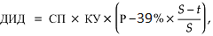

Приложение №1
Инвестиционная декларация
к договору страхования по программе «{{policy.product}}»
№ {{policy.number}} от {{policy.issueDate}} г. (далее – Декларация)
ИНФОРМАЦИЯ, ПРЕДОСТАВЛЯЕМАЯ БАНКОМ ВТБ (ПУБЛИЧНЫМ
АКЦИОНЕРНЫМ ОБЩЕСТВОМ), ДЕЙСТВУЮЩИМ ОТ ИМЕНИ СТРАХОВОЙ
ОРГАНИЗАЦИИ ООО СК « РОСГОССТРАХ ЖИЗНЬ», ПРИ ЗАКЛЮЧЕНИИ С
ФИЗИЧЕСКИМ ЛИЦОМ ДОГОВОРА ДОБРОВОЛЬНОГО СТРАХОВАНИЯ ЖИЗНИ С
УЧАСТИЕМ СТРАХОВАТЕЛЯ В ИНВЕСТИЦИОННОМ ДОХОДЕ СТРАХОВЩИКА
№ {{policy.number}} от {{policy.issueDate}} г.
|
N п/п |
Вид информации | Содержание предоставляемой информации | Подпись физического лица, подтверждающая его ознакомление с информацией |
| 1 | 2 | 3 | 4 |
| 1 | Информация о договоре добровольного страхования жизни с участием страхователя в инвестиционном доходе страховщика (далее - договор добровольного страхования) | 1.1 Переданные по договору добровольного страхования денежные средства не подлежат страхованию в соответствии с Федеральным законом от 23 декабря 2003 года N 177-ФЗ «О страховании вкладов в банках Российской Федерации» |
С информацией ознакомлен |
| 1.2 Отсутствует гарантия получения доходности* |
С информацией ознакомлен |
||
| 1.3 Договор добровольного страхования не является договором банковского вклада (банковского счета) |
С информацией ознакомлен |
* По договору добровольного страхования доход фиксирован и обеспечивается положительной разницей между размером страховой суммы по риску «ДОЖИТИЕ» и размером уплаченной страховой премии.
Наличие и величина дополнительного инвестиционного дохода, обеспечивающего доходность по договору добровольного страхования, зависят от результатов инвестиционной деятельности ООО СК «Росгосстрах Жизнь». Дополнительный инвестиционный доход формируется в соответствии с Правилами страхования и подлежит выплате при наступлении страховых случаев «ДОЖИТИЕ» или «СМЕРТЬ по любой причине», либо при досрочном расторжении договора добровольного страхования.
{{else}}* Наличие и величина дополнительного инвестиционного дохода, обеспечивающего доходность по договору добровольного страхования, зависят от результатов инвестиционной деятельности ООО СК «Росгосстрах Жизнь». Дополнительный инвестиционный доход формируется в соответствии с Правилами страхования и подлежит выплате при наступлении страховых случаев «ДОЖИТИЕ» или «СМЕРТЬ по любой причине», либо при досрочном расторжении договора добровольного страхования.
{{/if}}Основные положения договора добровольного страхования указаны в Информации (памятке) о договоре добровольного страхования, в том числе о его условиях и рисках, связанных с его исполнением.

Страховщик: ООО СК «Росгосстрах Жизнь»{{#unless hiddenTextSurrenderValues}}.{{/unless}}, лицензии Банка России: {{insurer.license}}, ИНН {{insurer.INN}}, КПП {{insurer.KPP}}
Юридический адрес: {{insurer.address}}
Реквизиты банка: {{bankInfo}}
Телефон круглосуточного Контакт-центра: 8 800 100 12 10 (бесплатный номер
для
звонков по России){{#unless hiddenTextSurrenderValues}}.{{/unless}}
Для оплаты считайте данный штрих код
в мобильном приложении интернет-банка
ДОГОВОР СТРАХОВАНИЯ № {{policy.number}} от {{policy.issueDate}} г.
по программе «{{policy.product}}»
на основании {{policy.rule}}
(далее по тексту – Правила).
| Фамилия Имя Отчество: | {{holder.fullName}} | Пол: | {{holder.gender}} | ||||
| Дата рождения: | {{holder.dateOfBirth}} | Место рождения: | {{holder.birthPlace}} | ||||
| Телефон: | {{holder.phoneNumber}} | E-mail: | {{holder.email}} | Гражданство: | {{holder.citizenship}} | ||
| Документ, удостоверяющий личность: | {{holder.document.typeAndSN}} | Дата выдачи: | {{holder.document.dateOfIssue}} | ||||
| Кем выдан: | {{holder.document.issuedBy}} | ||||||
| Адрес постоянной регистрации: | {{holder.registrationAddress}} | ||||||
| Почтовый адрес: | {{holder.postAddress}} | ||||||
| Фамилия Имя Отчество: | {{holder.fullName}} | Пол: | {{holder.gender}} | |||
| Дата рождения: | {{holder.dateOfBirth}} | Место рождения: | {{holder.birthPlace}} | |||
| Телефон: | {{holder.phoneNumber}} | Гражданство: | {{holder.citizenship}} | |||
| E-mail: | {{holder.email}} | |||||
| Документ, удостоверяющий личность: | {{holder.document.typeAndSN}} | Дата выдачи: | {{holder.document.dateOfIssue}} | |||
| Кем выдан: | {{holder.document.issuedBy}} | |||||
| Адрес постоянной регистрации: | {{holder.registrationAddress}} | |||||
| Почтовый адрес: | {{holder.postAddress}} | |||||
| Фамилия Имя Отчество: | {{insured.fullName}} | Пол: | {{insured.gender}} | ||||
| Дата рождения: | {{insured.dateOfBirth}} | Место рождения: | {{insured.birthPlace}} | ||||
| Телефон: | {{insured.phoneNumber}} | E-mail: | {{insured.email}} | Гражданство: | {{insured.citizenship}} | ||
| Документ, удостоверяющий личность: | {{insured.document.typeAndSN}} | Дата выдачи: | {{insured.document.dateOfIssue}} | ||||
| Кем выдан: | {{insured.document.issuedBy}} | ||||||
| Адрес постоянной регистрации: | {{insured.registrationAddress}} | ||||||
| Почтовый адрес: | {{insured.postAddress}} | ||||||
| Фамилия Имя Отчество: | {{insured.fullName}} | Пол: | {{insured.gender}} | |||
| Дата рождения: | {{insured.dateOfBirth}} | Место рождения: | {{insured.birthPlace}} | |||
| Телефон: | {{insured.phoneNumber}} | Гражданство: | {{insured.citizenship}} | |||
| E-mail: | {{insured.email}} | |||||
| Документ, удостоверяющий личность: | {{insured.document.typeAndSN}} | Дата выдачи: | {{insured.document.dateOfIssue}} | |||
| Кем выдан: | {{insured.document.issuedBy}} | |||||
| Адрес постоянной регистрации: | {{insured.registrationAddress}} | |||||
| Почтовый адрес: | {{insured.postAddress}} | |||||
| Выгодоприобретатель {{this.index}}. Доля {{this.percentage}}% | |||||||
| Фамилия Имя Отчество, Дата рождения: | {{this.beneficiar.fullName}}, {{this.beneficiar.dateOfBirth}} | Пол: | {{this.beneficiar.gender}} | ||||
| Дата рождения: | {{this.beneficiar.dateOfBirth}} | Место рождения: | {{this.beneficiar.placeOfBirth}} | ||||
| Телефон: | {{this.beneficiar.phoneNumber}} | E-mail: | {{this.beneficiar.email}} | Гражданство: | {{this.beneficiar.citizenship}} | ||
| Документ, удостоверяющий личность: | {{this.beneficiar.document.typeAndSN}} | Дата выдачи: | {{this.beneficiar.document.dateOfIssue}} | ||||
| Кем выдан: | {{this.beneficiar.document.document.issuedBy}} | ||||||
| Адрес постоянной регистрации: | {{this.beneficiar.registrationAddress}} | ||||||
| Почтовый адрес: | {{this.beneficiar.postAddress}} | ||||||
| Выгодоприобретатель {{this.index}}. Доля {{this.percentage}}% | ||||||
| Фамилия Имя Отчество, Дата рождения: | {{this.beneficiar.fullName}}, {{this.beneficiar.dateOfBirth}} | Пол: | {{this.beneficiar.gender}} | |||
| Дата рождения: | {{this.beneficiar.dateOfBirth}} | Место рождения: | {{this.beneficiar.placeOfBirth}} | |||
| Телефон: | {{this.beneficiar.phoneNumber}} | E-mail: | {{this.beneficiar.email}} | Гражданство: | {{this.beneficiar.citizenship}} | |
| Документ, удостоверяющий личность: | {{this.beneficiar.document.typeAndSN}} | Дата выдачи: | {{this.beneficiar.document.dateOfIssue}} | |||
| Кем выдан: | {{this.beneficiar.document.document.issuedBy}} | |||||
| Адрес постоянной регистрации: | {{this.beneficiar.registrationAddress}} | |||||
| Почтовый адрес: | {{this.beneficiar.postAddress}} | |||||
В случае если общая доля менее 100%, Выгодоприобретателями на случай смерти Застрахованного по оставшейся доле являются наследники Застрахованного по закону.
{{/if}} {{else}}Наследники по закону
{{/if}}| Страховые риски | Страховая сумма, {{currency}} | Размер единовременного страхового взноса, {{currency}} | Срок страхования по риску | |
| с | по | |||
| {{this.insuranceRisks}} | {{this.sumInsured}} | {{this.insurancePremium}} | {{this.startDate}} | {{this.endDate}} |
| {{this.insuranceRisks}} | {{this.sumInsured}} | {{this.insurancePremium}} | {{this.startDate}} | {{this.endDate}} |
| Страховые риски | Страховая сумма, {{currency}} | Страховая премия, {{currency}} | Срок страхования по риску | |
| с | по | |||
| {{risk.premium.sum}} | ||||
| {{this.insuranceRisks}} | {{this.sumInsured}} | {{this.startDate}} | {{this.endDate}} | |
| {{this.insuranceRisks}} | {{this.sumInsured}} | {{this.startDate}} | {{this.endDate}} | |
При определении страховой суммы в договоре страхования в иностранной валюте страховая выплата производится в рублях по курсу Банка России на дату выплаты. Банковские расходы, связанные с осуществлением страховой выплаты, оплачиваются получателем платежа.
{{#if isPremiumSplit}}| Периодичность оплаты страховой премии: | единовременно | |
| Размер страховой премии: | {{risk.premium.sum}} {{currency}} | |
| Страховая премия уплачивается: | {{experationDate}} | |
| Страховая премия уплачивается единовременно в полном объеме не позднее: | {{experationDate}} | |
В случае если страховая премия не была оплачена (или была оплачена не полностью) в указанный срок,
{{#if insuranceTerms.paymentPeriodLastDate}} либо в случае оплаты страховой премии позднее {{insuranceTerms.paymentPeriodLastDate}}, {{/if}}
Страховщик вправе считать договор страхования не вступившим в силу и произвести возврат поступивших
средств Страхователю.
{{#if isNewTextPSB}}
Стороны признают, что события, имеющие признаки страхового и наступившие до уплаты страховой премии в полном объеме,
не признаются страховым случаем и страховая выплата по ним не осуществляется (пункт 2 статьи 957 Гражданского кодекса Российской Федерации).
{{/if}}
При определении страховой премии в договоре страхования в иностранной валюте сумма, подлежащая
уплате в
рублях, определяется по курсу Банка России соответствующей валюты на дату оплаты. Банковские
расходы,
связанные с оплатой страховой премии, несет Страхователь.
| Срок действия договора страхования: | {{insuranceTerms.text}} | Договор страхования вступает в силу с {{insuranceTerms.startDate}}{{#unless isNewTextPSB}} при условии уплаты страховой премии в полном объеме{{/unless}} и действует до {{insuranceTerms.endDate}} включительно. |
Страховая сумма по риску «Смерть» определяется на дату страхового случая для периода действия договора страхования,
соответствующего дате страхового случая.
При расторжении договора страхования выкупная сумма определяется в пределах сформированного в установленном порядке
страхового резерва на день прекращения договора страхования.
| Период действия договора страхования | Страховая сумма по риску «Смерть», {{currency}} | Выкупная сумма, {{currency}} | |
| начало | окончание | ||
| {{this.periodStartDate}} | {{this.periodEndDate}} | {{this.riskSum}} | {{this.surrenderValue}} |
При определении страховой суммы в договоре страхования в иностранной валюте страховая выплата производится в рублях по курсу Банка России на дату выплаты. При определении выкупной суммы в договоре страхования в иностранной валюте выплата выкупной суммы переводится в рублях по курсу Банка России на дату выплаты. Банковские расходы, связанные с осуществлением страховой выплаты или выплаты выкупной суммы, оплачиваются получателем платежа.
{{else}}При расторжении договора страхования {{#unless hiddenTextSurrenderValues}}до истечения 30 (тридцати) календарных дней со дня уплаты Страхователем страховой премии выкупная сумма определяется в размере уплаченной Страхователем страховой премии. По истечении 30 (тридцати) календарных дней со дня уплаты Страхователем страховой премии{{/unless}} выкупная сумма определяется в пределах сформированного в установленном порядке страхового резерва на день прекращения договора страхования.
| Период действия договора страхования | Выкупная сумма, {{currency}} | |
| начало | окончание | |
| {{this.periodStartDate}} | {{this.periodEndDate}} | {{this.surrenderValue}} |
При определении выкупной суммы в договоре страхования в иностранной валюте выплата выкупной суммы переводится в рублях по курсу Банка России на дату выплаты. Банковские расходы, связанные с осуществлением выплаты выкупной суммы, оплачиваются получателем платежа.
{{/if}}| Настоящим я, {{insured.fullName}}, | подтверждаю, что: | не подтверждаю, что: |
{{this}}
| Настоящим Страхователь и Застрахованный | подтверждают, что: | не подтверждают, что: |
{{this}}
Приложение №1
Инвестиционная декларация
к договору страхования по программе «{{policy.product}}»
№ {{policy.number}} от {{policy.issueDate}} г. (далее – Декларация)
Общие положения
В настоящей Декларации используются следующие определения и термины:
Базовый актив - инвестиционный инструмент, динамика (изменение значения/цены) и денежные поступления от которого определяют величину дополнительного инвестиционного дохода (далее – ДИД).
Процентный период - временной интервал, определенный в п. 1.4 Декларации путем указания даты начала и даты окончания периода, в течение которого значение или динамика (изменение значения) Базового актива оказывает влияние на размер Купона в соответствии с п. 1.5 Декларации.
Купон за Процентный период - размер купона в валюте договора страхования, рассчитанный в соответствии с п. 1.5 Декларации по итогам Процентного периода.
Порядок расчета дополнительного инвестиционного дохода (ДИД)
1.1. Базовый актив: «{{strategyDescription}}».
1.2. Описание Базового актива: {{baseActiveDescription}}.
1.3. Период инвестирования: дата начала – {{purchaseDate}}, дата окончания – {{dischargeDate}}.
1.4. Процентные периоды, даты расчета ДИД:
| Номер Процентного периода, t | Дата начала периода (включительно) | Дата окончания периода (включительно) | Дата определения КС(t) | Дата расчета ДИД |
| {{this.periodNumber}} | {{this.outpaymentPeriodStart}} | {{this.outpaymentPeriodEnd}} | {{this.outpaymentPeriodStart}} | {{this.outpaymentDidDate}} |
1.5. Купон за каждый из Процентных периодов, указанных в п. 1.4 Декларации, рассчитывается следующим образом:
1.5.1. Определяется значение КС(t) как значение Ключевой ставки Банка России, действующей на дату, указанную в п. 1.4 Декларации как дата определения КС(t).
1.5.2. Купон за Процентный период t рассчитывается как произведение страховой премии на длительность Процентного периода (в долях года) и значение КС(t) {{#if BASIS_ACTIVE_CHOSE_VTB_ALL}}{{discountText}}{{/if}}:
| Купон ( t ) = СП * | m | {{#if BASIS_ACTIVE_CHOSE_VTB_ALL}} * ( КС ( t ){{discountFormula}} {{/if}} |
| 365 |
Где Купон ( t ) – купон за Процентный период t;
СП – страховая премия по договору страхования;
m – количество календарных дней в Процентном периоде t.
1.6. ДИД рассчитывается на даты, указанные в п. 1.4 Декларации (столбец «Дата расчета ДИД»), либо на дату окончания последнего Процентного периода, предшествующего дате принятия решения о страховой выплате, при наступлении страхового случая по риску «Смерть» или на дату окончания последнего Процентного периода, предшествующего дате досрочного прекращения договора страхования, в случае досрочного прекращения договора страхования по причинам иным, чем наступление страхового случая, как сумма купонов по всем полностью истекшим на дату расчета Процентным периодам:
Где ДИДx – дополнительный инвестиционный доход на дату расчета ДИД x;
K – количество Процентных периодов полностью истекших на дату x (дата окончания последнего по
порядку истекшего Процентного периода должна быть не позже даты x).
Порядок информирования о размере рассчитанного ДИД
{{#if isBasisAvtiveVtbOutpaymentAtEnd}}2.1. При наступлении страхового случая по риску «Дожитие» Страховщик в течение 30 календарных дней информирует лицо, в пользу которого заключен договор страхования по риску «Дожитие» (далее – Выгодоприобретатель по риску «Дожитие») о размере ДИД, рассчитанного в соответствии с настоящей Декларацией, одним или несколькими следующими способами:
{{else}}2.1. Страховщик в течение 30 календарных дней после расчета ДИД, осуществленного в соответствии с п. 1.6 Декларации, информирует лицо, в пользу которого заключен договор страхования по риску «Дожитие» (далее – Выгодоприобретатель по риску «Дожитие») о размере рассчитанного ДИД одним или несколькими следующими способами:
{{/if}}2.1.1. смс-уведомление и/или телефонный звонок по номеру телефона, указанному в имеющихся у Страховщика документах;
2.1.2. уведомление по электронной почте по адресу электронной почты, указанному в имеющихся у Страховщика документах;
2.1.3. нарочно или посредством почтовой связи по адресу регистрации, указанному в имеющихся у Страховщика документах;
2.1.4. посредством размещения информации на своем сайте в информационно-телекоммуникационной сети Интернет, в т. ч. в «Личном кабинете» – информационном ресурсе, размещенном на сайте Страховщика, или в мобильном приложении – программном обеспечении, предназначенном для работы на мобильных устройствах (смартфон, планшет и др.), используемом для доступа к информационным ресурсам Страховщика.
2.2. В случае если Выгодоприобретатель по риску «Дожитие» не совпадает со Страхователем / Застрахованным по риску «Дожитие» Страховщик информирует Выгодоприобретателя по риску «Дожитие» о размере ДИД, рассчитанного в соответствии с настоящей Декларацией, в течение 30 календарных дней с даты его обращения к Страховщику или дат расчета ДИД, указанных в п. 1.6 Декларации (столбец «Дата расчета ДИД»), (в зависимости от того какое событие наступило позднее) одним или несколькими способами, указанными в п. 2.1 Декларации.
2.3. Страховщик может не информировать Выгодоприобретателя по риску «Дожитие» о размере ДИД, рассчитанного в соответствии с настоящей Декларацией, если в течение 30 календарных дней с даты обращения Выгодоприобретателя по риску «Дожитие» или дат расчета ДИД, указанных в п. 1.4 Декларации (столбец «Дата расчета ДИД»), (в зависимости от того какое событие наступило позднее) будет осуществлена выплата ДИД.
Порядок выплаты ДИД
3.1. В случае отказа Страхователя от договора страхования в течение 30 календарных дней (в соответствии с Указанием Банка России от 20.11.2015 №3854-У «О минимальных (стандартных) требованиях к условиям и порядку осуществления отдельных видов добровольного страхования») со дня его заключения при отсутствии событий, имеющих признаки страхового случая, ДИД не рассчитывается и соответственно не подлежит выплате.
3.2. В случае досрочного прекращения договора страхования по причинам иным, чем наступление страхового случая, и за исключением случая, указанного в п. 3.1 Декларации, выплате подлежит ДИД, рассчитанный на дату окончания последнего Процентного периода, предшествующего дате досрочного прекращения договора страхования.
{{#if isBasisAvtiveVtbOutpaymentAtEnd}}3.3. При наступлении страхового случая по риску «Дожитие» выплате подлежит ДИД, рассчитанный на дату окончания срока страхования.
3.4. При наступлении страхового случая по риску «Смерть» выплате подлежит ДИД, рассчитанный на дату окончания последнего Процентного периода, предшествующего дате принятия решения о страховой выплате.
3.5. Выплата ДИД осуществляется не позднее 3 месяцев с даты окончания фактического периода инвестирования.
{{else}}3.3. В случае обращения Застрахованного (или иного лица, в пользу которого заключен Договор страхования по риску «Дожитие») в течение срока страхования за выплатой ДИД (или его части), выплате подлежит ДИД, рассчитанный на дату обращения.
3.4. При наступлении страхового случая по риску «Дожитие» выплате подлежит ДИД, рассчитанный на дату окончания срока страхования.
3.5. При наступлении страхового случая по риску «Смерть» выплате подлежит ДИД, рассчитанный на дату окончания последнего Процентного периода, предшествующего дате принятия решения о страховой выплате.
3.6. Выплата ДИД осуществляется за вычетом суммы ранее выплаченного ДИД.
3.7. Выплата ДИД осуществляется не позднее 3 месяцев с даты окончания фактического периода инвестирования.
{{/if}}Общие положения
В настоящей Декларации используются следующие определения и термины:
{{#if isNewText}}Актив Инвестиционной части - инвестиционный инструмент, динамика (изменение цены) и денежные поступления от которого определяют величину дополнительного инвестиционного дохода (далее - ДИД). Описание Актива Инвестиционной части указано в п. 2.2 Декларации.
Эмитент - организация, выпустившая инвестиционный инструмент, приобретенный за счет средств Инвестиционной части, денежные поступления от которого определяют размер ДИД.
{{else}}Актив Инвестиционной части - инвестиционный инструмент, динамика (изменение цены) и денежные поступления от которого определяют величину дополнительного инвестиционного дохода (далее - ДИД). Описание Актива Инвестиционной части {{#if isVTBpartner}}указано{{else}}и его основные характеристики указываются{{/if}} в п. {{#if isAfter20221101}}2.2{{else}}2.1{{/if}} Декларации.
Эмитент - организация, выпустившая инвестиционный инструмент, приобретенный за счет средств Инвестиционной части, денежные поступления от которого определяют размер ДИД{{#if isVTBpartner}}.{{/if}}
{{/if}}Коэффициент участия - параметр, выраженный в процентах, показывающий долю от динамики Актива Инвестиционной части, которая участвует в расчете ДИД.
Период инвестирования - период, в течение которого средства Инвестиционной части были фактически инвестированы и за который выплачивается ДИД или его часть.
Структура продукта
1.1. Страховщик за счет средств страховой премии формирует Гарантийный фонд и Инвестиционную часть с целью исполнения обязательств по договору страхования.
1.2. Гарантийный фонд - набор инвестиционных инструментов, приобретенных за счет части страховой премии и обеспечивающих выполнение обязательств Страховщика по выплате гарантированных страховых и выкупных сумм. Средства Гарантийного фонда размещаются в консервативные инструменты, такие как облигации федерального займа Российской Федерации (ОФЗ), облигации субъектов Российской Федерации, облигации, обязательства по которым гарантированы Российской Федерацией, а также другие инструменты.
1.3. Инвестиционная часть - набор инвестиционных инструментов, приобретенных за счет части страховой премии и обеспечивающих зависимость стоимости Инвестиционной части (денежных поступлений от инструментов Инвестиционной части) от стоимости Актива Инвестиционной части в течение периода между датой начала расчета ДИД и датой окончания расчета ДИД. Стоимость инструментов Инвестиционной части (денежные поступления от инструментов Инвестиционной части) определяют размер ДИД.
{{#if isAfter20221101}}Параметры Инвестиционной части
2.1. Актив Инвестиционной части: {{dataBasicInvestment.investmentStrategyDescriptionFull}}.
2.2. Описание Актива Инвестиционной части: {{dataBasicInvestment.baseActiveDescription}}.
2.3. Период расчета ДИД: дата начала расчета ДИД - {{purchaseDate}}, дата окончания расчета ДИД - {{dischargeDate}}.
2.4. Ожидаемое значение Коэффициента участия (далее - КУ): {{dataBasicInvestment.participationCoeff}}
{{#if isDynamicEmitent}}2.5. Эмитент: {{dataBasicInvestment.emitent}}
{{else if isVTBpartner}}2.5. Эмитент: будет определен по итогам конкурса на покупку инструмента Инвестиционной части в соответствии с внутренними процедурами Страховщика
{{else}}2.5. Эмитент: Эмитент будет определен по итогам конкурса на покупку инструмента Инвестиционной части
{{/if}} {{else}}Параметры Инвестиционной части
2.1. Актив Инвестиционной части: {{dataBasicInvestment.baseActiveDescription}}.
2.2. Период расчета ДИД: дата начала расчета ДИД - {{purchaseDate}}, дата окончания расчета ДИД - {{dischargeDate}}.
2.3. Ожидаемое значение Коэффициента участия (далее - КУ): {{dataBasicInvestment.participationCoeff}}
2.4. Эмитент: Эмитент будет определен по итогам конкурса на покупку инструмента Инвестиционной части
{{/if}}Порядок расчета дополнительного инвестиционного дохода (ДИД)
3.1. Размер ДИД рассчитывается следующим образом:
3.1.1. при досрочном прекращении договора страхования или при наступлении страхового случая по риску «Смерть Застрахованного по любой причине» (далее - «Смерть»):
| ДИД = СП × КУ × ( P - {{optionPrice}}% * | S - t | ), |
| S |
| ДИД = СП × КУ × ( P - {{optionPrice}}% * | S - t | ), |
| S |



{{/if}} {{#if is29_4}} {{/if}} {{#if is41_5}} {{/if}} {{/if}}3.1.2. при наступлении страхового случая по риску «Дожитие Застрахованного до окончания срока страхования» (далее - «Дожитие»):
Где СП – страховая премия по договору страхования; КУ – Коэффициент участия; P – котировка на продажу инструментов Инвестиционной части (в процентах от номинальной стоимости инструмента), публикуемая Эмитентом на закрытие торгового дня на дату досрочного прекращения договора страхования или на дату принятия решения о страховой выплате при наступлении страхового случая по риску «Смерть»; S – срок действия договора страхования в днях; t – количество дней, прошедших от даты вступления договора страхования в силу до даты досрочного прекращения договора страхования или до даты принятия решения о страховой выплате при наступлении страхового случая по риску «Смерть»; x0 – значение (цена) Актива Инвестиционной части на закрытие торгового (основной торговой сессии) дня на дату покупки; x1 – значение (цена) Актива Инвестиционной части на закрытие торгового (основной торговой сессии) дня на дату погашения. {{else}}
Где СП – страховая премия по договору страхования; КУ – Коэффициент участия; P – котировка на продажу инструментов Инвестиционной части (в процентах от номинальной стоимости инструмента), публикуемая Эмитентом на закрытие торгового дня на дату досрочного прекращения договора страхования или на дату принятия решения о страховой выплате при наступлении страхового случая по риску «Смерть»; S – срок действия договора страхования в днях; t – количество дней, прошедших от даты вступления договора страхования в силу до даты досрочного прекращения договора страхования или до даты принятия решения о страховой выплате при наступлении страхового случая по риску «Смерть»; x0 – значение (цена) Актива Инвестиционной части на закрытие торгового{{#if isVTBpartner}} (основной торговой сессии){{/if}} дня на дату покупки; x1 – значение (цена) Актива Инвестиционной части на закрытие торгового{{#if isVTBpartner}} (основной торговой сессии){{/if}} дня на дату погашения. {{/if}}
3.2. В случае отрицательного значения ДИД он приравнивается к нулю.
3.3. Для целей расчета ДИД используются котировки (значения Актива Инвестиционной части), публикуемые Эмитентом на российской бирже. В случае отсутствия котировки (значения Актива Инвестиционной части) на закрытие торгового дня на соответствующую дату, опубликованной в выше перечисленных источниках, а также в случае выходного или праздничного дня в юрисдикции Эмитента, используется котировка на следующий день.
{{#if isNewText}}Порядок информирования о размере рассчитанного ДИД
4.1. При наступлении страхового случая по риску «Дожитие» Страховщик в течение 30 календарных дней информирует лицо, в пользу которого заключен договор страхования по риску «Дожитие» (далее – Выгодоприобретатель по риску «Дожитие») о размере ДИД, рассчитанного в соответствии с настоящей Декларацией, одним или несколькими следующими способами:
4.1.1. смс-уведомление и/или телефонный звонок по номеру телефона, указанному в имеющихся у Страховщика документах;
4.1.2. уведомление по электронной почте по адресу электронной почты, указанному в имеющихся у Страховщика документах;
4.1.3. нарочно или посредством почтовой связи по адресу регистрации, указанному в имеющихся у Страховщика документах;
4.1.4. посредством размещения информации на своем сайте в информационно-телекоммуникационной сети Интернет, в т. ч. в «Личном кабинете» – информационном ресурсе, размещенном на сайте Страховщика, или в мобильном приложении – программном обеспечении, предназначенном для работы на мобильных устройствах (смартфон, планшет и др.), используемом для доступа к информационным ресурсам Страховщика.
4.2. В случае если Выгодоприобретатель по риску «Дожитие» не совпадает со Страхователем / Застрахованным по риску «Дожитие» Страховщик информирует Выгодоприобретателя по риску «Дожитие» о размере ДИД, рассчитанного в соответствии с настоящей Декларацией, в течение 30 календарных дней с даты его обращения к Страховщику или даты наступления страхового случая по риску «Дожитие» (в зависимости от того какое событие наступило позднее) одним или несколькими способами, указанными в п. 4.1 Декларации.
4.3. Страховщик может не информировать Выгодоприобретателя по риску «Дожитие» о размере ДИД, рассчитанного в соответствии с настоящей Декларацией, если в течение 30 календарных дней с даты обращения Выгодоприобретателя по риску «Дожитие» или даты наступления страхового случая по риску «Дожитие» (в зависимости от того какое событие наступило позднее) будет осуществлена выплата ДИД.
{{else if isVTBpartner}}Порядок информирования о размере рассчитанного ДИД
4.1. При наступлении страхового случая по риску «Дожитие» Страховщик в течение 30 календарных дней информирует лицо, в пользу которого заключен договор страхования по риску «Дожитие» (далее – Выгодоприобретатель по риску «Дожитие») о размере ДИД, рассчитанного в соответствии с настоящей Декларацией, одним или несколькими следующими способами:
4.1.1. смс-уведомление и/или телефонный звонок по номеру телефона, указанному в имеющихся у Страховщика документах;
4.1.2. уведомление по электронной почте по адресу электронной почты, указанному в имеющихся у Страховщика документах;
4.1.3. нарочно или посредством почтовой связи по адресу регистрации, указанному в имеющихся у Страховщика документах;
4.1.4. посредством размещения информации на своем сайте в информационно-телекоммуникационной сети Интернет, в т. ч. в «Личном кабинете» – информационном ресурсе, размещенном на сайте Страховщика, или в мобильном приложении – программном обеспечении, предназначенном для работы на мобильных устройствах (смартфон, планшет и др.), используемом для доступа к информационным ресурсам Страховщика.
4.2. В случае если Выгодоприобретатель по риску «Дожитие» не совпадает со Страхователем / Застрахованным по риску «Дожитие» Страховщик информирует Выгодоприобретателя по риску «Дожитие» о размере ДИД, рассчитанного в соответствии с настоящей Декларацией, в течение 30 календарных дней с даты его обращения к Страховщику или даты наступления страхового случая по риску «Дожитие» (в зависимости от того какое событие наступило позднее) одним или несколькими способами, указанными в п. 4.1 Декларации.
4.3. Страховщик может не информировать Выгодоприобретателя по риску «Дожитие» о размере ДИД, рассчитанного в соответствии с настоящей Декларацией, если в течение 30 календарных дней с даты обращения Выгодоприобретателя по риску «Дожитие» или даты наступления страхового случая по риску «Дожитие» (в зависимости от того какое событие наступило позднее) будет осуществлена выплата ДИД.
{{else}}Порядок выплаты ДИД
4.1. В случае досрочного прекращения договора страхования по причинам иным, чем наступление страхового случая, выплате подлежит ДИД, рассчитанный на дату прекращения договора страхования.
4.2. При наступлении страхового случая по риску «Дожитие» выплате подлежит ДИД, рассчитанный на дату окончания срока страхования.
4.3. При наступлении страхового случая по риску «Смерть» выплате подлежит ДИД, рассчитанный на дату принятия решения о страховой выплате.
4.4. Выплата ДИД осуществляется в течение 3 месяцев после даты окончания фактического периода инвестирования.
{{/if}} {{#if isNewText}}Порядок выплаты ДИД
5.1. В случае досрочного прекращения договора страхования по причинам иным, чем наступление страхового случая, выплате подлежит ДИД, рассчитанный на дату прекращения договора страхования.
5.2. При наступлении страхового случая по риску «Дожитие» выплате подлежит ДИД, рассчитанный на дату окончания срока страхования.
5.3. При наступлении страхового случая по риску «Смерть» выплате подлежит ДИД, рассчитанный на дату принятия решения о страховой выплате.
5.4. Выплата ДИД осуществляется в течение 3 месяцев после даты окончания фактического периода инвестирования.
Основные риски
6.1. Инвестирование связано с принятием рисков. Цель настоящего раздела – предоставить Страхователю информацию о рисках, связанных с инвестированием, а также предупредить о возможных потерях, которые могут негативно повлиять на стоимость инструментов Инвестиционной части, размер ДИД и возможность его выплаты.
6.2. В случае невозможности получения Страховщиком средств от реализации инструментов Инвестиционной части по независящим от него причинам, в том числе реализации рисков, указанных в настоящем пункте (и в зависимости от их характера), Страховщик вправе полностью или в течение определенного периода времени не распределять, не начислять, не рассчитывать и не выплачивать ДИД:
6.2.1. Кредитный риск. Риск потерь в результате полного или частичного неисполнения обязательств
Эмитентом, инвестиционным брокером, через которого осуществляются операции, а также прочими участниками,
задействованными в операциях по перечислению денежных средств.
Кредитный риск может реализоваться в следующих случаях: банкротство контрагента, ликвидация контрагента
или отзыв (аннулирование) у контрагента лицензии Банка России, введение Банком России моратория на
удовлетворение требований кредиторов контрагента и др.
6.2.2. Прочие риски (не отраженные в Декларации вследствие разнообразия ситуаций, возникающих при инвестировании), которые могут повлиять на возможность выплатить ДИД, если такие риски предусмотрены страховым законодательством Российской Федерации.
6.3. В случае реализации указанных ниже рисков ДИД может быть равен нулю:
6.3.1. Рыночный риск. Риск снижения стоимости инструментов Инвестиционной части в результате возникновения неблагоприятных событий экономического характера, выражающихся, например, в негативной динамике Актива Инвестиционной части или одного или нескольких его компонентов, валютного курса и др.
6.3.2. Риск изменения кредитного качества Эмитента, риск замены Эмитента и Актива Инвестиционной части, выпускаемого Эмитентом. Кредитное качество Эмитента может как улучшаться, так и ухудшаться в течение срока действия договора. Эмитент имеет право объявить о назначении нового эмитента, кредитное качество которого может быть ниже.
6.3.3. Риск вторичного рынка. Котировки на продажу инвестиционных инструментов Инвестиционной части, на основании которых производится расчет ДИД при досрочном прекращении договора страхования или при наступлении страхового случая по риску «Смерть», определяется и публикуются Эмитентом. Эмитент стремится предоставлять котировки, но не гарантирует это. Страховщик не может оказывать влияние на котировки. В силу указанных выше факторов Страхователь несет риск снижения стоимости инструментов Инвестиционной части (и, как следствие, ДИД), а также риск самого факта наличия котировки на продажу инструментов Инвестиционной части от Эмитента.
6.3.4. Калькуляционный риск. Расчет всех параметров осуществляется калькуляционным агентом, который руководствуется принципами добросовестности и справедливости. В случае Фонда в качестве Актива Инвестиционной части или одного из его компонентов: калькуляционный агент вправе временно приостановить расчета Фонда, изменить его состав и/или методику его расчета, также существует риск полного прекращения существования Фонда. В случае Корзины акций или отдельной акции в качестве Актива Инвестиционной части: калькуляционной агент вправе изменить компоненты Корзины и/или скорректировать их цены / скорректировать цену акции с целью отражения справедливого экономического эффекта от некоторых событий, таких как (но не ограничиваясь ими): делистинг акции с биржи, слияние, поглощение или реорганизация компании, консолидация или дробление акций, а также другие корпоративные действия, имеющие размывающее или консолидирующее действие на стоимость акции.
6.3.5. Риск досрочного погашения инструментов Инвестиционной части. Эмитент на свое разумное усмотрение в соответствии с эмиссионной документацией имеет право досрочно погасить инструменты Инвестиционной части вследствие ряда событий, таких как: прекращение расчета или замена Актива Инвестиционной части, прекращение торговли компонентами Актива Инвестиционной части, невозможность определения значений компонентов Актива Инвестиционной части в течение длительного времени, значительные изменения условий Актива Инвестиционной части и условий его использования, а также других событий. Сумма, выплачиваемая по инструментам Инвестиционной части в результате досрочного погашения, может быть меньше, чем сумма, которая была бы выплачена в случае отсутствия досрочного погашения.
6.3.6. В случае Индекса в качестве Актива Инвестиционной части или одного из его компонентов: Индекс обеспечивает участие в корзине компонентов, входящих в состав Индекса, что означает зависимость динамики Индекса от динамики компонентов корзины Индекса. Тем не менее, динамика Индекса и компонентов корзины Индекса могут материально отличаться как в сторону превышения доходности Индекса над доходностью корзины компонентов Индекса, так и наоборот. Участие в Индексе не эквивалентно участию в корзине компонентов Индекса в силу возможного наличия таких механизмов расчёта Индекса, как регулярное приведение весов компонентов Индекса к установленной доле, наличие механизма контроля волатильности (в результате чего участие Индекса в корзине компонентов Индекса в каждый момент времени может быть как меньше, так и больше 100%), снижение доходности Индекса на величину синтетических дивидендов.
6.3.7. Прочие риски (не отраженные в Декларации вследствие разнообразия ситуаций, возникающих при инвестировании), которые могут повлиять на стоимость Инвестиционной части и, как следствие, на величину ДИД.
6.4. Страховщик не выступает с инвестиционными рекомендациями и не гарантирует выплату ДИД.
6.5. Страхователь понимает и принимает указанные риски.
{{else if isVTBpartner}}Порядок выплаты ДИД
5.1. В случае досрочного прекращения договора страхования по причинам иным, чем наступление страхового случая, выплате подлежит ДИД, рассчитанный на дату прекращения договора страхования.
5.2. При наступлении страхового случая по риску «Дожитие» выплате подлежит ДИД, рассчитанный на дату окончания срока страхования.
5.3. При наступлении страхового случая по риску «Смерть» выплате подлежит ДИД, рассчитанный на дату принятия решения о страховой выплате.
5.4. Выплата ДИД осуществляется в течение 3 месяцев после даты окончания фактического периода инвестирования.
Основные риски
6.1. Инвестирование связано с принятием рисков. Цель настоящего раздела – предоставить Страхователю информацию о рисках, связанных с инвестированием, а также предупредить о возможных потерях, которые могут негативно повлиять на стоимость инструментов Инвестиционной части, размер ДИД и возможность его выплаты.
6.2. В случае невозможности получения Страховщиком средств от реализации инструментов Инвестиционной части по независящим от него причинам, в том числе реализации рисков, указанных в настоящем пункте (и в зависимости от их характера), Страховщик вправе полностью или в течение определенного периода времени не распределять, не начислять, не рассчитывать и не выплачивать ДИД:
6.2.1. Кредитный риск. Риск потерь в результате полного или частичного неисполнения обязательств
Эмитентом, инвестиционным брокером, через которого осуществляются операции, а также прочими участниками,
задействованными в операциях по перечислению денежных средств.
Кредитный риск может реализоваться в следующих случаях: банкротство контрагента, ликвидация контрагента
или отзыв (аннулирование) у контрагента лицензии Банка России, введение Банком России моратория на
удовлетворение требований кредиторов контрагента и др.
6.2.2. Прочие риски (не отраженные в Декларации вследствие разнообразия ситуаций, возникающих при инвестировании), которые могут повлиять на возможность выплатить ДИД, если такие риски предусмотрены страховым законодательством Российской Федерации.
6.3. В случае реализации указанных ниже рисков ДИД может быть равен нулю:
6.3.1. Рыночный риск. Риск снижения стоимости инструментов Инвестиционной части в результате возникновения неблагоприятных событий экономического характера, выражающихся, например, в негативной динамике Актива Инвестиционной части или одного или нескольких его компонентов, валютного курса и др.
6.3.2. Риск изменения кредитного качества Эмитента, риск замены Эмитента и Актива Инвестиционной части, выпускаемого Эмитентом. Кредитное качество Эмитента может как улучшаться, так и ухудшаться в течение срока действия договора. Эмитент имеет право объявить о назначении нового эмитента, кредитное качество которого может быть ниже.
6.3.3. Риск вторичного рынка. Котировки на продажу инвестиционных инструментов Инвестиционной части, на основании которых производится расчет ДИД при досрочном прекращении договора страхования или при наступлении страхового случая по риску «Смерть», определяется и публикуются Эмитентом. Эмитент стремится предоставлять котировки, но не гарантирует это. Страховщик не может оказывать влияние на котировки. В силу указанных выше факторов Страхователь несет риск снижения стоимости инструментов Инвестиционной части (и, как следствие, ДИД), а также риск самого факта наличия котировки на продажу инструментов Инвестиционной части от Эмитента.
6.3.4. Калькуляционный риск. Расчет всех параметров осуществляется калькуляционным агентом, который руководствуется принципами добросовестности и справедливости. В случае Фонда в качестве Актива Инвестиционной части или одного из его компонентов: калькуляционный агент вправе временно приостановить расчета Фонда, изменить его состав и/или методику его расчета, также существует риск полного прекращения существования Фонда. В случае Корзины акций или отдельной акции в качестве Актива Инвестиционной части: калькуляционной агент вправе изменить компоненты Корзины и/или скорректировать их цены / скорректировать цену акции с целью отражения справедливого экономического эффекта от некоторых событий, таких как (но не ограничиваясь ими): делистинг акции с биржи, слияние, поглощение или реорганизация компании, консолидация или дробление акций, а также другие корпоративные действия, имеющие размывающее или консолидирующее действие на стоимость акции.
6.3.5. Риск досрочного погашения инструментов Инвестиционной части. Эмитент на свое разумное усмотрение в соответствии с эмиссионной документацией имеет право досрочно погасить инструменты Инвестиционной части вследствие ряда событий, таких как: прекращение расчета или замена Актива Инвестиционной части, прекращение торговли компонентами Актива Инвестиционной части, невозможность определения значений компонентов Актива Инвестиционной части в течение длительного времени, значительные изменения условий Актива Инвестиционной части и условий его использования, а также других событий. Сумма, выплачиваемая по инструментам Инвестиционной части в результате досрочного погашения, может быть меньше, чем сумма, которая была бы выплачена в случае отсутствия досрочного погашения.
6.3.6. В случае Индекса в качестве Актива Инвестиционной части или одного из его компонентов: Индекс обеспечивает участие в корзине компонентов, входящих в состав Индекса, что означает зависимость динамики Индекса от динамики компонентов корзины Индекса. Тем не менее, динамика Индекса и компонентов корзины Индекса могут материально отличаться как в сторону превышения доходности Индекса над доходностью корзины компонентов Индекса, так и наоборот. Участие в Индексе не эквивалентно участию в корзине компонентов Индекса в силу возможного наличия таких механизмов расчёта Индекса, как регулярное приведение весов компонентов Индекса к установленной доле, наличие механизма контроля волатильности (в результате чего участие Индекса в корзине компонентов Индекса в каждый момент времени может быть как меньше, так и больше 100%), снижение доходности Индекса на величину синтетических дивидендов.
6.3.7. Прочие риски (не отраженные в Декларации вследствие разнообразия ситуаций, возникающих при инвестировании), которые могут повлиять на стоимость Инвестиционной части и, как следствие, на величину ДИД.
6.4. Страховщик не выступает с инвестиционными рекомендациями и не гарантирует выплату ДИД.
6.5. Страхователь понимает и принимает указанные риски.
{{else}}Основные риски
5.1. Инвестирование связано с принятием рисков. Цель настоящего раздела – предоставить Страхователю информацию о рисках, связанных с инвестированием, а также предупредить о возможных потерях, которые могут негативно повлиять на стоимость инструментов Инвестиционной части, размер ДИД и возможность его выплаты. В случае реализации рисков, указанных в настоящем разделе (и в зависимости от их характера), Страховщик вправе полностью или в течение определенного периода времени не распределять, не начислять и не выплачивать ДИД.
5.2. Рыночный риск: риск потерь в результате возникновения неблагоприятных событий экономического характера, выражающихся, например, в негативной динамике Актива Инвестиционной части или одного или нескольких его компонентов, валютного курса и др.
5.3. Кредитный риск: риск потерь в результате полного или частичного неисполнения обязательств Эмитентом, инвестиционным брокером, через которого осуществляются операции, а также прочими участниками, задействованными в операциях по перечислению денежных средств.
5.4. Риск изменения кредитного качества Эмитента, риск замены Эмитента и Актива Инвестиционной части, выпускаемого Эмитентом. Кредитное качество Эмитента может как улучшаться, так и ухудшаться в течение срока действия договора.
5.5. Риск вторичного рынка. Котировки на продажу инвестиционных инструментов Инвестиционной части, на основании которых производится расчет ДИД при досрочном прекращении договора страхования или при наступлении страхового случая по риску «Смерть», определяется и публикуются Эмитентом. Страховщик не может оказывать влияние на котировки. В силу указанных выше факторов Страхователь несет риск снижения стоимости инструментов Инвестиционной части (и, как следствие, ДИД), а также риск самого факта наличия котировки на продажу инструментов Инвестиционной части от Эмитента.
5.6. Калькуляционный риск. Расчет всех параметров осуществляется калькуляционным агентом, который руководствуется принципами добросовестности и справедливости. В случае Фонда в качестве Актива Инвестиционной части или одного из его компонентов: калькуляционный агент вправе временно приостановить расчета Фонда, изменить его состав и/или методику его расчета, также существует риск полного прекращения существования Фонда. В случае Корзины акций или отдельной акции в качестве Актива Инвестиционной части: калькуляционной агент вправе изменить компоненты Корзины и/или скорректировать их цены/скорректировать цену акции с целью отражения справедливого экономического эффекта от некоторых событий, таких как (но не ограничиваясь ими): делистинг акции с биржи, слияние, поглощение или реорганизация компании, консолидация или дробление акций, а также другие корпоративные действия, имеющие размывающее или консолидирующее действие на стоимость акции.
5.7. Риск досрочного погашения инструментов Инвестиционной части. Эмитент на свое разумное усмотрение имеет право досрочно погасить инструменты Инвестиционной части вследствие ряда событий, таких как: прекращение расчета или замена Актива Инвестиционной части, прекращение торговли компонентами Актива Инвестиционной части, значительные изменения условий Актива Инвестиционной части и условий его использования, а также других событий. Сумма, выплачиваемая по инструментам Инвестиционной части в результате досрочного погашения, может быть меньше, чем сумма, которая была бы выплачена в случае отсутствия досрочного погашения.
5.8. Правовой риск. Риск потерь, связанных с появлением новых или изменением (отменой) существующих нормативно-правовых актов в Российской Федерации, а также любых других юрисдикциях, в которых ведут деятельность контрагенты, вовлеченные в процесс выпуска и совершения сделок с инструментами Инвестиционной части, а также инструментами, входящими (напрямую или через фонды) в состав Актива Инвестиционной части.
5.9. Риск, связанный с международными ограничениями (например, введение санкций), ограничивающими права получения инвестиционного дохода по инструментам Инвестиционной части Страховщиком, а также связанный с введением иных ограничений, делающих невозможным размещение средств Инвестиционной части и получение ДИД в соответствии с Декларацией.
5.10. Прочие риски (не отраженные в Декларации вследствие разнообразия ситуаций, возникающих при инвестировании), которые могут повлиять на стоимость Инвестиционной части и, как следствие, на величину ДИД, и на саму возможность выплатить ДИД.
5.11. В случае Индекса в качестве Актива Инвестиционной части или одного из его компонентов: Индекс обеспечивает участие в корзине компонентов, указанных в описании Индекса в п. 2.1 Декларации, что означает зависимость динамики Индекса от динамики компонентов корзины Индекса. Тем не менее, динамика Индекса и компонентов корзины Индекса могут материально отличаться как в сторону превышения доходности Индекса над доходностью корзины компонентов Индекса, так и наоборот. Участие в Индексе не эквивалентно участию в корзине компонентов Индекса в силу возможного наличия таких механизмов расчёта Индекса, как регулярное приведение весов компонентов Индекса к установленной доле, наличие механизма контроля волатильности (в результате чего участие Индекса в корзине компонентов Индекса в каждый момент времени может быть как меньше, так и больше 100%), снижение доходности Индекса на величину синтетических дивидендов.
5.12. Страховщик не выступает с инвестиционными рекомендациями и не гарантирует выплату ДИД.
{{/if}}
Информация
о договоре добровольного страхования, в том числе о его
условиях и рисках, связанных с его исполнением
по программе «{{policy.product}}» № {{policy.number}} от {{policy.issueDate}} г.
Используйте информацию, содержащуюся в данной таблице,
при принятии решения о том, подходит ли Вам предлагаемая
услуга с учетом уровня Вашего среднемесячного дохода
| Разница между страховой суммой по риску «Дожитие» и совокупной страховой премией по договору добровольного страхования |
Разница между страховой суммой по риску «Смерть» совокупной страховой премией по договору добровольного страхования |
Разница между страховой суммой по риску «Смерть НС» и совокупной страховой премией по договору добровольного страхования |
| Разница между страховой суммой по риску «Дожитие» и совокупной страховой премией по договору добровольного страхования |
Разница между страховой суммой по риску «Смерть» совокупной страховой премией по договору добровольного страхования |
Разница между страховой суммой по риску «Смерть НС» и совокупной страховой премией по договору добровольного страхования |
| Разница между страховой суммой по риску «Дожитие Застрахованного до окончания срока страхования» (далее – Дожитие) и совокупной страховой премией по договору добровольного страхования |
Разница между страховой суммой по риску «Смерть Застрахованного по любой причине» (далее – Смерть) и совокупной страховой премией по договору добровольного страхования |
Разница между страховой суммой по риску «Смерть Застрахованного в результате несчастного случая» и совокупной страховой премией по договору добровольного страхования |
| {{difference.printDiffSurvavial1}}1 {{difference.printDiffSurvavial2}} | {{difference.printDiffDeath1}}1 {{difference.printDiffDeath2}} | {{differenceDNS.printDiffSurvavial1}}1 {{differenceDNS.printDiffSurvavial2}} |
| Разница между страховой суммой по риску «Дожитие Застрахованного до окончания срока страхования» (далее – Дожитие) и совокупной страховой премией по договору добровольного страхования |
Разница между страховой суммой по риску «Смерть Застрахованного по любой причине» (далее – Смерть) и совокупной страховой премией по договору добровольного страхования |
| {{difference.printDiffSurvavial1}}1 {{difference.printDiffSurvavial2}} | {{difference.printDiffDeath1}}1 {{difference.printDiffDeath2}} |
| № п/п | ОПИСАНИЕ СОДЕРЖАНИЯ ПРЕДОСТАВЛЯЕМОЙ ИНФОРМАЦИИ | |||||||||||||||||||||||||||||||||||||
| 1 |
Информация о Страховщике
|
Полное наименование: Общество с ограниченной
ответственностью Страховая
компания «Росгосстрах
Жизнь»
(далее – Страховая компания или Страховщик). Лицензии Банка России {{insurer.license}}.
Кредитный рейтинг: {{creditRating}}
|
||||||||||||||||||||||||||||||||||||
| 2 |
Информация о доходности по договорам добровольного страхования с участием
Страхователя в
инвестиционном доходе Страховщика, по которым обязательства по уплате страховой суммы по
риску
Дожитие за 3 (три) предшествующих календарных года прекращены исполнением
|
{{#if newProduct}}Расчет доходности невозможен в силу отсутствия договоров с
участием
Страхователя в инвестиционном доходе Страховщика, по которым обязательства по уплате
страховой
суммы по риску Дожитие за 3 (три) календарных года, предшествующих заключению настоящего
договора, прекращены исполнением и которые содержат условия, аналогичные заключаемому
договору{{else}}{{historyIncome}}% годовых.{{/if}}
|
||||||||||||||||||||||||||||||||||||
| 3 |
Предупреждение о риске:
|
|
||||||||||||||||||||||||||||||||||||
| 4 |
Информация о праве получателя страховых услуг отказаться от договора
добровольного страхования,
порядке определения размера страховой выплаты, порядке и сроке осуществления страховой
выплаты
по каждому страховому риску, обязанности Страховщика удержать налог при расчете страховой
выплаты
|
|
||||||||||||||||||||||||||||||||||||
| 5 |
Информация о размере денежных средств (в процентах на день предоставления
информации),
направляемых на обеспечение исполнения обязательств Страховщика по договору добровольного
страхования по выплате страховой суммы и инвестиционного дохода
|
{{commission.allOutcome}}% от страховой премии (суммы страховых взносов за
весь период действия
договора страхования) в размере {{commission.allPremium}} рублей1.
|
||||||||||||||||||||||||||||||||||||
| 6 |
Информация о размерах агентского вознаграждения, комиссионного
вознаграждения, а также платежей,
связанных с заключением и исполнением договора добровольного страхования (в процентах)
|
{{commission.allIncome}} %.
|
||||||||||||||||||||||||||||||||||||
|
Примечание к пунктам 5 и 6:
Сумма денежных средств за весь срок действия договора добровольного
страхования, подлежащих
передаче получателем страховых услуг, направляется на обеспечение исполнения обязательств
Страховщика по выплате выгодоприобретателю страховой суммы и инвестиционного дохода, на
выплату
агентского вознаграждения, комиссионного вознаграждения, а также на платежи, связанные с
заключением и исполнением договора добровольного страхования, и составляет 100% (сто
процентов).
|
||||||||||||||||||||||||||||||||||||||
| 7 |
Информация о способе определения дохода по договору добровольного
страхования жизни, а также,
если применимо, перечне показателей, от значения (изменения значений) которых зависит размер
дохода по договору добровольного страхования
|
{{#if isBasisActiveVTB}}
Порядок расчета дополнительного инвестиционного дохода (ДИД) 1.1. Базовый актив: «{{strategyDescription}}», описание Базового актива: {{baseActiveDescription}} 1.2. Процентные периоды, даты расчета ДИД: 1.2.1. Количество Процентных периодов – {{outpaymentPlanPeriodCount}}. Дата начала 1-го Процентного периода – {{outpaymentPlanFirstPeriodStart}}. Даты начала для последующих Процентных периодов определяются как 1-е число каждого месяца в течение срока действия договора страхования. Датой окончания каждого Процентного периода является последнее число календарного месяца с даты начала Процентного периода (за исключением последнего Процентного периода, дата окончания последнего Процентного периода – {{outpaymentPlanLastPeriodEnd}}). 1.2.2. Даты расчета ДИД: {{outpaymentPlanDidDatesString}}. 1.3. Купон за каждый из Процентных периодов рассчитывается следующим образом: 1.3.1. Определяется значение КС(t) как значение Ключевой ставки Банка России, действующей на дату начала Процентного периода. 1.3.2. Купон за Процентный период t рассчитывается как произведение страховой премии на длительность Процентного периода (в долях года) и значение КС(t) {{#if BASIS_ACTIVE_CHOSE_VTB_ALL}}{{discountText}}{{/if}}:
Где Купон ( t ) – купон за Процентный период t; 1.4. ДИД рассчитывается на даты, указанные в п. 1.2.2, либо на дату окончания последнего Процентного периода, предшествующего дате принятия решения о страховой выплате, при наступлении страхового случая по риску «Смерть» или на дату окончания последнего Процентного периода, предшествующего дате досрочного прекращения договора страхования, в случае досрочного прекращения договора страхования по причинам иным, чем наступление страхового случая, как сумма купонов по всем полностью истекшим на дату расчета Процентным периодам: Где ДИДx – дополнительный инвестиционный доход на дату расчета ДИД x;
Дополнительный инвестиционный доход не выплачивается в случаях, которые
предусмотрены
страховым законодательством Российской Федерации, а также в случаях, когда Страховщик не
рассчитал
дополнительный инвестиционный доход согласно условиям договора страхования в связи с тем,
что:
1) дополнительный инвестиционный доход по договору
страхования зависит
от исполнения обязательств лицом, обязанным по ценной бумаге, и/или стороной договора,
являющегося производным
финансовым инструментом, договора банковского вклада, поименованным в договоре добровольного
страхования, и
такие лица не исполнили свои обязательства;
2) получение Страховщиком информации о значении (изменении
значения)
показателя, от которого зависит размер дополнительного инвестиционного дохода по договору
страхования,
невозможно и у Страховщика имеются документы, подтверждающие невозможность получения такой
информации.
|
{{else}}
1.1. Страховщик за счет средств страховой премии формирует Гарантийный фонд
и Инвестиционную
часть с
целью исполнения обязательств по договору страхования.
1.2. Гарантийный фонд - набор инвестиционных инструментов, приобретенных за
счет части страховой
премии и обеспечивающих выполнение обязательств Страховщика по выплате гарантированных
страховых
и
выкупных сумм. Средства Гарантийного фонда размещаются в консервативные инструменты, такие
как
облигации федерального займа Российской Федерации (ОФЗ), облигации субъектов Российской
Федерации,
облигации, обязательства по которым гарантированы Российской Федерацией, а также другие
инструменты.
1.3. Инвестиционная часть - набор инвестиционных инструментов, приобретенных
за счет части
страховой
премии и обеспечивающих зависимость стоимости Инвестиционной части (денежных поступлений от
инструментов Инвестиционной части) от стоимости Актива Инвестиционной части в течение
периода
между
датой начала расчета ДИД и датой окончания расчета ДИД. Стоимость инструментов
Инвестиционной
части
(денежные поступления от инструментов Инвестиционной части) определяют размер ДИД.
{{#if isAfter20221101}}
2.1. Актив Инвестиционной части:
{{dataBasicInvestment.investmentStrategyDescriptionFull}}.
2.2. Описание Актива Инвестиционной части:
{{dataBasicInvestment.baseActiveDescription}}.
2.3. Период расчета ДИД: дата начала расчета ДИД - {{purchaseDate}}, дата
окончания расчета ДИД -
{{dischargeDate}}.
2.4. Ожидаемое значение Коэффициента участия (далее - КУ):
{{dataBasicInvestment.participationCoeff}}
{{#if isDynamicEmitent}}
2.5. Эмитент: {{dataBasicInvestment.emitent}} {{else if isVTBpartner}}
2.5. Эмитент: будет определен по итогам конкурса на покупку инструмента
Инвестиционной
части в соответствии с внутренними процедурами Страховщика
{{else}}
2.5. Эмитент: Эмитент будет определен по итогам конкурса на покупку
инструмента Инвестиционной
части
{{/if}}
{{else}}
2.1. Актив Инвестиционной части:
{{dataBasicInvestment.baseActiveDescription}}.
2.2. Период расчета ДИД: дата начала расчета ДИД - {{purchaseDate}}, дата
окончания расчета ДИД -
{{dischargeDate}}.
2.3. Ожидаемое значение Коэффициента участия (далее - КУ):
{{dataBasicInvestment.participationCoeff}}
2.4. Эмитент: Эмитент будет определен по итогам конкурса на покупку
инструмента Инвестиционной
части
{{/if}}
3.1. Размер ДИД рассчитывается следующим образом:
3.1.1. при досрочном прекращении договора страхования или при наступлении
страхового случая по
риску
«Смерть Застрахованного по любой причине» (далее - «Смерть»):
{{#if isDynamicOptionPrice}}
{{else if isVTBpartner}}
{{else}} {{#if is26_5}}
3.1.2. при наступлении страхового случая по риску «Дожитие Застрахованного
до окончания срока
страхования» (далее - «Дожитие»):
Где СП – страховая премия по договору страхования; КУ – Коэффициент участия; P – котировка на продажу инструментов Инвестиционной части (в процентах от номинальной стоимости инструмента), публикуемая Эмитентом на закрытие торгового дня на дату досрочного прекращения договора страхования или на дату принятия решения о страховой выплате при наступлении страхового случая по риску «Смерть»; S – срок действия договора страхования в днях; t – количество дней, прошедших от даты вступления договора страхования в силу до даты досрочного прекращения договора страхования или до даты принятия решения о страховой выплате при наступлении страхового случая по риску «Смерть»; x0 – значение (цена) Актива Инвестиционной части на закрытие торгового (основной торговой сессии) дня на дату покупки; x1 – значение (цена) Актива Инвестиционной части на закрытие торгового (основной торговой сессии) дня на дату погашения. {{else}}
Где СП – страховая премия по договору страхования; КУ – Коэффициент участия;
P – котировка на
продажу
инструментов Инвестиционной части (в процентах от номинальной стоимости инструмента),
публикуемая
Эмитентом на закрытие торгового дня на дату досрочного прекращения договора страхования или
на
дату
принятия решения о страховой выплате при наступлении страхового случая по риску «Смерть»; S
–
срок
действия договора страхования в днях; t – количество дней, прошедших от даты вступления
договора
{{/if}}
страхования в силу до даты досрочного прекращения договора страхования или до даты принятия решения о страховой выплате при наступлении страхового случая по риску «Смерть»; x0 – значение (цена) Актива Инвестиционной части на закрытие торгового{{#if isVTBpartner}} (основной торговой сессии){{/if}} дня на дату покупки; xt – значение (цена) Актива Инвестиционной части на закрытие торгового{{#if isVTBpartner}} (основной торговой сессии){{/if}} дня на дату погашения.
3.2. В случае отрицательного значения ДИД он приравнивается к нулю.
3.3. Для целей расчета ДИД используются котировки (значения Актива
Инвестиционной части),
публикуемые Эмитентом на российской бирже. В случае отсутствия котировки (значения Актива
Инвестиционной части) на закрытие торгового дня на соответствующую дату, опубликованной в
выше
перечисленных источниках, а также в случае выходного или праздничного дня в юрисдикции
Эмитента,
используется котировка на следующий день.
{{#if isNewText}}
Дополнительный инвестиционный доход не выплачивается в случаях, которые
предусмотрены
страховым законодательством Российской Федерации, а также в случаях, когда Страховщик не
рассчитал
дополнительный инвестиционный доход согласно условиям договора страхования в связи с тем,
что:
1) дополнительный инвестиционный доход по договору
страхования зависит
от исполнения обязательств лицом, обязанным по ценной бумаге, и/или стороной договора,
являющегося производным
финансовым инструментом, договора банковского вклада, поименованным в договоре добровольного
страхования, и
такие лица не исполнили свои обязательства;
2) получение Страховщиком информации о значении (изменении
значения)
показателя, от которого зависит размер дополнительного инвестиционного дохода по договору
страхования,
невозможно и у Страховщика имеются документы, подтверждающие невозможность получения такой
информации.
{{else if isVTBpartner}}
Дополнительный инвестиционный доход не выплачивается в случаях, которые
предусмотрены
страховым законодательством Российской Федерации, а также в случаях, когда Страховщик не
рассчитал
дополнительный инвестиционный доход согласно условиям договора страхования в связи с тем,
что:
1) дополнительный инвестиционный доход по договору
страхования зависит
от исполнения обязательств лицом, обязанным по ценной бумаге, и/или стороной договора,
являющегося производным
финансовым инструментом, договора банковского вклада, поименованным в договоре добровольного
страхования, и
такие лица не исполнили свои обязательства;
2) получение Страховщиком информации о значении (изменении
значения)
показателя, от которого зависит размер дополнительного инвестиционного дохода по договору
страхования,
невозможно и у Страховщика имеются документы, подтверждающие невозможность получения такой
информации.
{{else}}
Дополнительный инвестиционный доход не выплачивается в случае, если он не
начислен по
договору страхования на момент осуществления страховой выплаты по рискам Дожитие и Смерть
или выплаты выкупной суммы.
{{/if}}
|
{{/if}}
|||||||||||||||||||||||||||||||||||
1По курсу Банка России на дату заключения договора страхования, в случае если договор страхования заключен в валюте отличной от рублей
2Указание Банка России от 20.11.2015 № 3854-У «О минимальных (стандартных) требованиях к условиям и порядку осуществления отдельных видов добровольного страхования».
Информация
о договоре добровольного страхования, в том числе о его
условиях и рисках, связанных с его исполнением
по программе «{{policy.product}}» № {{policy.number}} от {{policy.issueDate}} г.
Используйте информацию, содержащуюся в данной таблице,
при принятии решения о том, подходит ли Вам предлагаемая
услуга с учетом уровня Вашего среднемесячного дохода
| Разница между страховой суммой по риску «Дожитие Застрахованного до окончания срока страхования» (далее – Дожитие) и совокупной страховой премией по договору добровольного страхования |
Разница между страховой суммой по риску «Смерть Застрахованного по любой причине» (далее – Смерть) и совокупной страховой премией по договору добровольного страхования |
| {{difference.printDiffSurvavial1}}1 {{difference.printDiffSurvavial2}} | {{difference.printDiffDeath1}}1 {{difference.printDiffDeath2}} |
| № п/п | ОПИСАНИЕ СОДЕРЖАНИЯ ПРЕДОСТАВЛЯЕМОЙ ИНФОРМАЦИИ | ||||||||||
| 1 | Информация о Страховщике |
Полное наименование: Общество с ограниченной ответственностью Страховая
компания «Росгосстрах
Жизнь» (далее – Страховая компания или Страховщик). Лицензии Банка России {{insurer.license}}.
Кредитный рейтинг: {{creditRating}} |
|||||||||
| 2 | Информация о доходности по договорам добровольного страхования с участием Страхователя в инвестиционном доходе Страховщика, по которым обязательства по уплате страховой суммы по риску Дожитие за 3 (три) предшествующих календарных года прекращены исполнением | {{#if newProduct}}Расчет доходности невозможен в силу отсутствия договоров с участием Страхователя в инвестиционном доходе Страховщика, по которым обязательства по уплате страховой суммы по риску Дожитие за 3 (три) календарных года, предшествующих заключению настоящего договора, прекращены исполнением и которые содержат условия, аналогичные заключаемому договору{{else}}{{historyIncome}}% годовых.{{/if}} | |||||||||
| 3 | Предупреждение о риске: |
|
|||||||||
| 4 | Информация о праве получателя страховых услуг отказаться от договора добровольного страхования, порядке определения размера страховой выплаты, порядке и сроке осуществления страховой выплаты по каждому страховому риску, обязанности Страховщика удержать налог при расчете страховой выплаты |
|
|||||||||
| 5 | Информация о размере денежных средств (в процентах на день предоставления информации), направляемых на обеспечение исполнения обязательств Страховщика по договору добровольного страхования по выплате страховой суммы и инвестиционного дохода | {{commission.allOutcome}}% от страховой премии (суммы страховых взносов за весь период действия договора страхования) в размере {{commission.allPremium}} рублей1. | |||||||||
| 6 | Информация о размерах агентского вознаграждения, комиссионного вознаграждения, а также платежей, связанных с заключением и исполнением договора добровольного страхования (в процентах) | {{commission.allIncome}} %. | |||||||||
|
Примечание к пунктам 5 и 6:
Сумма денежных средств за весь срок действия договора добровольного страхования, подлежащих передаче получателем страховых услуг, направляется на обеспечение исполнения обязательств Страховщика по выплате выгодоприобретателю страховой суммы и инвестиционного дохода, на выплату агентского вознаграждения, комиссионного вознаграждения, а также на платежи, связанные с заключением и исполнением договора добровольного страхования, и составляет 100% (сто процентов). |
|||||||||||
| 7 | Информация о способе определения дохода по договору добровольного страхования жизни, а также, если применимо, перечне показателей, от значения (изменения значений) которых зависит размер дохода по договору добровольного страхования |
Структура продукта 1.1. Страховщик за счет средств страховой премии формирует Гарантийный фонд и Инвестиционную часть с целью исполнения обязательств по договору страхования. 1.2. Гарантийный фонд - набор инвестиционных инструментов, приобретенных за счет части страховой премии и обеспечивающих выполнение обязательств Страховщика по выплате гарантированных страховых и выкупных сумм. Средства Гарантийного фонда размещаются в консервативные инструменты, такие как облигации федерального займа Российской Федерации (ОФЗ), облигации субъектов Российской Федерации, облигации, обязательства по которым гарантированы Российской Федерацией, а также другие инструменты. 1.3. Инвестиционная часть - набор инвестиционных инструментов, приобретенных за счет части страховой премии и обеспечивающих зависимость стоимости Инвестиционной части (денежных поступлений от инструментов Инвестиционной части) от стоимости Актива Инвестиционной части в течение периода между датой начала расчета ДИД и датой окончания расчета ДИД. Стоимость инструментов Инвестиционной части (денежные поступления от инструментов Инвестиционной части) определяют размер ДИД. {{#if isAfter20221101}}Параметры Инвестиционной части 2.1. Актив Инвестиционной части: {{dataBasicInvestment.investmentStrategyDescriptionFull}}. 2.2. Описание Актива Инвестиционной части: {{dataBasicInvestment.baseActiveDescription}}. 2.3. Период расчета ДИД: дата начала расчета ДИД - {{purchaseDate}}, дата окончания расчета ДИД - {{dischargeDate}}. 2.4. Ожидаемое значение Коэффициента участия (далее - КУ): {{dataBasicInvestment.participationCoeff}} 2.5. Эмитент: Эмитент будет определен по итогам конкурса на покупку инструмента Инвестиционной части {{else}}Параметры Инвестиционной части 2.1. Актив Инвестиционной части: {{dataBasicInvestment.baseActiveDescription}}. 2.2. Период расчета ДИД: дата начала расчета ДИД - {{purchaseDate}}, дата окончания расчета ДИД - {{dischargeDate}}. 2.3. Ожидаемое значение Коэффициента участия (далее - КУ): {{dataBasicInvestment.participationCoeff}} 2.4. Эмитент: Эмитент будет определен по итогам конкурса на покупку инструмента Инвестиционной части {{/if}}Порядок расчета дополнительного инвестиционного дохода (ДИД) 3.1. Размер ДИД рассчитывается следующим образом: 3.1.1. при досрочном прекращении договора страхования или при наступлении страхового случая по риску «Смерть Застрахованного по любой причине» (далее - «Смерть»):
{{#if is26_5}}
3.1.2. при наступлении страхового случая по риску «Дожитие Застрахованного до окончания срока страхования» (далее - «Дожитие»): Где СП – страховая премия по договору страхования; КУ – Коэффициент участия; P – котировка на продажу инструментов Инвестиционной части (в процентах от номинальной стоимости инструмента), публикуемая Эмитентом на закрытие торгового дня на дату досрочного прекращения договора страхования или на дату принятия решения о страховой выплате при наступлении страхового случая по риску «Смерть»; S – срок действия договора страхования в днях; t – количество дней, прошедших от даты вступления договора страхования в силу до даты досрочного прекращения договора страхования или до даты принятия решения о страховой выплате при наступлении страхового случая по риску «Смерть»; x0 – значение (цена) Актива Инвестиционной части на закрытие торгового дня на дату покупки; xt – значение (цена) Актива Инвестиционной части на закрытие торгового дня на дату погашения. 3.2. В случае отрицательного значения ДИД он приравнивается к нулю. 3.3. Для целей расчета ДИД используются котировки (значения Актива Инвестиционной части), публикуемые Эмитентом на российской бирже. В случае отсутствия котировки (значения Актива Инвестиционной части) на закрытие торгового дня на соответствующую дату, опубликованной в выше перечисленных источниках, а также в случае выходного или праздничного дня в юрисдикции Эмитента, используется котировка на следующий день.
|
|||||||||
1По курсу Банка России на дату заключения договора страхования, в случае если договор страхования заключен в валюте отличной от рублей
2Указание Банка России от 20.11.2015 № 3854-У «О минимальных (стандартных) требованиях к условиям и порядку осуществления отдельных видов добровольного страхования».
Приложение к Информации о договоре добровольного страхования, в том числе о его условиях и рисках,
связанных
с его исполнением
по программе «{{policy.product}}» № {{policy.number}} от {{policy.issueDate}} г.
Таблица выкупных сумм
{{#if isVTBpartner}}При расторжении договора страхования выкупная сумма определяется в пределах сформированного в установленном порядке страхового резерва на день прекращения договора страхования.
{{else if isNewText}}При расторжении договора страхования выкупная сумма определяется в пределах сформированного в установленном порядке страхового резерва на день прекращения договора страхования.
{{else}}При расторжении договора страхования до истечения 30 (тридцати) календарных дней со дня
уплаты Страхователем страховой премии выкупная сумма определяется в размере уплаченной Страхователем
страховой премии. По истечении 30 (тридцати) календарных дней со дня уплаты Страхователем страховой
премии выкупная сумма определяется в пределах сформированного в установленном
порядке страхового резерва на день прекращения договора страхования.
В случае наличия у Страхователя задолженности по уплате страховых взносов перед Страховщиком, сумма
задолженности вычитается из выкупной суммы.
| Период действия договора страхования | Выкупная сумма, {{currency}} | |
| начало | окончание | |
| {{this.periodStartDate}} | {{this.periodEndDate}} | {{this.surrenderValue}} |
Приложение к Информации о договоре добровольного страхования, в том числе о его условиях и рисках,
связанных
с его исполнением
по программе «{{policy.product}}» № {{policy.number}} от {{policy.issueDate}} г.
Таблица выкупных сумм
При расторжении договора страхования до истечения 30 (тридцати) календарных дней со дня
уплаты Страхователем страховой премии выкупная сумма определяется в размере уплаченной Страхователем
страховой премии. По истечении 30 (тридцати) календарных дней со дня уплаты Страхователем страховой
премии выкупная сумма определяется в пределах сформированного в установленном
порядке страхового резерва на день прекращения договора страхования.
В случае наличия у Страхователя задолженности по уплате страховых взносов перед Страховщиком, сумма
задолженности вычитается из выкупной суммы.
| Период действия договора страхования | Выкупная сумма, {{currency}} | |
| начало | окончание | |
| {{this.periodStartDate}} | {{this.periodEndDate}} | {{this.surrenderValue}} |
Уведомление
Я, {{holder.fullName}}, настоящим подтверждаю, что ознакомл{{#if holderGenderMale}}ен{{else}}ена{{/if}} со всеми условиями договора добровольного страхования жизни СК «Росгосстрах жизнь» (далее – Договор), с особенностями Стратегий управления по данному Договору. Я понимаю все условия по оформляемому Договору, а именно:
ФИО ____________________________________________
(заполняется клиентом собственноручно)
Паспорт серия ________ № _______________
(заполняется клиентом собственноручно)
_____________ / __________________________________________________ /
(подпись) (Ф.И.О. полностью, заполняется клиентом собственноручно)
«____» ________________ 20___ г.
(заполняется клиентом собственноручно)
Согласие на обработку персональных данных Страхователя
| 1.ПЕРСОНАЛЬНЫЕ ДАННЫЕ КЛИЕНТА | ||||||||||||||||||||||||
| Фамилия Имя Отчество | {{holder.fullName}} | |||||||||||||||||||||||
| Пол |
{{#if holder.isGenderMale}}Мужской Женский {{else}}Мужской Женский{{/if}} |
Гражданство |
{{#if holder.isCitizenshipRusssia}}РФ Иное {{else}}РФ Иное{{/if}} |
Дата рождения | {{holder.dateOfBirth}} | Место рождения | {{holder.birthPlace}} | |||||||||||||||||
| Документ, удостоверяющий личность |
{{#if holder.isRusssiaPassport}}паспорт гражданина РФ заграничный паспорт гражданина РФ свидетельство о рождении Иное{{/if}} {{#if holder.isForeignTravelPassport}}паспорт гражданина РФ заграничный паспорт гражданина РФ свидетельство о рождении Иное{{/if}} {{#if holder.isBirthCertificate}}паспорт гражданина РФ заграничный паспорт гражданина РФ свидетельство о рождении Иное{{/if}} {{#if holder.isOtherDocument}}паспорт гражданина РФ заграничный паспорт гражданина РФ свидетельство о рождении Иное{{/if}} |
|||||||||||||||||||||||
| Серия | {{holder.docSeries}} | Номер | {{holder.docNumber}} | |||||||||||||||||||||
| код подразделения (при наличии): |
{{holder.issuerCode}} | дата выдачи | {{holder.issueDate}} | |||||||||||||||||||||
| орган, выдавший документ: | {{holder.issuerName}} | |||||||||||||||||||||||
| Сведения о ранее выданном паспорте гражданина РФ (заполняется при наличии) |
Серия | Номер | ||||||||||||||||||||||
| Адрес по месту постоянной регистрации (страна, индекс, регион, район, город/населенный пункт, улица, дом, корпус, квартира) |
Дата регистрации |
|||||||||||||||||||||||
| {{holder.regFullAddress}} | ||||||||||||||||||||||||
| Адрес по месту фактического проживания (страна, индекс, регион, район, город/населенный пункт, улица, дом, корпус, квартира) |
{{#if holder.isSameAsRegistration}}{{else}}{{/if}} совпадает с адресом регистрации по месту жительства | |||||||||||||||||||||||
| {{holder.factFullAddress}} | ||||||||||||||||||||||||
| Домашний телефон по адресу регистрации |
Телефон по месту фактического проживания |
Мобильный телефон |
{{holder.phoneNumber}} | |||||||||||||||||||||
| {{holder.email}} | ИНН (при наличии) |
{{holder.INN}} | СНИЛС (при наличии) |
{{holder.SNILS}} | ||||||||||||||||||||
|
2.СОГЛАСИЕ КЛИЕНТА, ПРЕДОСТАВЛЕННОЕ ПАО Банк «ФК Открытие»/ ПАО «Росгосстрах
Банк», НА ВЗАИМОДЕЙСТВИЕ С БЮРО КРЕДИТНЫХ ИСТОРИЙ |
||||||||||||||||||||||||
| Я выражаю согласие не выражаю согласие |
на получение ПАО Банк «ФК Открытие», ПАО «Росгосстрах Банк» (далее совместно –
Пользователи
кредитной
истории, а по отдельности – Пользователь кредитной истории) информации обо мне из любых
бюро
кредитных
историй (одного или нескольких), содержащейся в основной части моей кредитной истории в
объеме,
порядке
и сроки, которые предусмотрены Федеральным законом от 30.12.2004 №218-ФЗ «О кредитных
историях». - проверки Пользователем /-ями кредитной истории сведений, предоставленных мной
Пользователю /
-ям
кредитной истории либо иным компаниям Группы* при приеме на обслуживание и /или при
заключении
договоров
с Пользователем/-ями кредитной истории и/или иными компаниями Группы; Код субъекта кредитной истории □□□□□□□□□□□□□□ (Указать свой код, сформированный посредством комбинации цифровых и буквенных символов в соответствии с пунктом 2.13 Указания Банка России от 31.08.2005 №1610-У «О порядке направления запросов и получения информации из Центрального каталога кредитных историй субъектом кредитной истории и пользователем кредитной истории посредством обращения на официальный сайт Банка России в информационно-телекоммуникационной сети «Интернет». Код (дополнительный код) произвольно формируется заемщиком и должен состоять из букв русского алфавита и цифр или букв латинского алфавита и цифр. Минимальная длина кодов не должна быть менее четырех знаков, максимальная - не должна быть более пятнадцати знаков. * Под компаниями Группы понимаются: ПАО Банк «ФК Открытие», место нахождения: г. Москва, ул. Летниковская, д.2, стр.4; ПАО «Росгосстрах Банк», место нахождения: 121059, г. Москва, вн. тер. г. муниципальный округ Дорогомилово, ул. Киевская, д. 7, к. 1; АО «НПФ «Открытие», место нахождения: г. Москва; ПАО СК «Росгосстрах», место нахождения: 140002, Московская область, город Люберцы, улица Парковая, дом 3; ООО СК «Росгосстрах Жизнь», место нахождения: 121059, г. Москва, вн.тер.г. муниципальный округ Дорогомилово, ул. Киевская, д. 7, к. 1; АО «Открытие Брокер», место нахождения 115114, г. Москва, ул. Летниковская, д. 2, стр. 4; ООО «УК «ОТКРЫТИЕ», место нахождения 115114, Москва, ул. Кожевническая, д. 14, стр. 5 |
|||||||||||||||||||||||
| 3. СОГЛАСИЕ КЛИЕНТА НА ОБРАБОТКУ ПЕРСОНАЛЬНЫХ ДАННЫХ | ||||||||||||||||||||||||
| Я выражаю согласие не выражаю согласие |
на обработку 1) ПАО Банк «ФК Открытие», место нахождения: г. Москва, ул. Летниковская, д.2, стр.4; 2) ПАО «Росгосстрах Банк», место нахождения: 121059, г. Москва, вн. тер. г. муниципальный округ Дорогомилово, ул. Киевская, д. 7, к. 1; 3) АО «НПФ «Открытие», место нахождения: г. Москва; 4) ПАО СК «Росгосстрах», место нахождения: 140002, Московская область, город Люберцы, улица Парковая, дом 3; 5) ООО СК «Росгосстрах Жизнь», место нахождения: 121059, г. Москва, вн.тер.г. муниципальный округ Дорогомилово, ул. Киевская, д. 7, к. 1; 6) АО «Открытие Брокер», место нахождения 115114, г. Москва, ул. Летниковская, д. 2, стр. 4; 7) ООО «УК «ОТКРЫТИЕ», место нахождения 115114, Москва, ул. Кожевническая, д. 14, стр. 5 (далее – Операторы) моих персональных данных (совершение любых действий с использованием средств автоматизации и/ или без, в том числе сбор, запись, систематизацию, накопление, хранение, уточнение (обновление, изменение), извлечение, использование, передачу (распространение, предоставление, доступ), включая трансграничную передачу, обезличивание, блокирование, удаление и уничтожение) в соответствии с требованиями Федерального закона от 27.07.2006 №152-ФЗ «О персональных данных». Фотография моего лица (индивидуальные биометрические характеристики моего лица), персональные данные, указанные в настоящем согласии, включая: фамилию, имя, отчество; данные документа, удостоверяющего личность; год, месяц, число и место рождения; гражданство; адрес; контактные телефоны, почтовые адреса, адреса электронной почты и другие сведения, предоставленные мною для заключения договора с любым из Операторов или в период их действия, содержащиеся в заявлениях, письмах, соглашениях и иных документах (полученных Операторами или одним из Операторов также в электронном виде), предоставляются в целях:
- сбора и оформления документов для заключения договоров страхования в рамках
добровольного
страхования физических лиц по программам накопительного и инвестиционного страхования
жизни;
Настоящее согласие действует до момента получения письменного заявления Застрахованного лица об отзыве настоящего согласия одним из Операторов или всеми Операторами. Прекращение кредитного договора/договора о предоставлении и использовании банковских карт/ иного договора оказания услуг не прекращает действие согласия. Осведомлен(а), что настоящее согласие может быть отозвано мной при предоставлении Оператору/-ам заявления в простой письменной форме. |
|||||||||||||||||||||||
| 4. СОГЛАСИЕ КЛИЕНТА НА ПОЛУЧЕНИЕ КОММЕРЧЕСКИХ ПРЕДЛОЖЕНИЙ |
||||||||||||||||||||||||
| Я выражаю согласие не выражаю согласие |
на получение мною от ООО СК «Росгосстрах Жизнь» и иных компаний Группы информации о продуктах и услугах, коммерческих предложений Банка/ группы Компаний*, в том числе посредством почтовой связи и сетям электросвязи (телефонной, факсимильной, подвижной радиотелефонной связи и прочее) по адресу постоянной регистрации, адресу фактического проживания, адресу электронной почты, на контактные номера телефонов, указанные в настоящем согласии. * Под компаниями Группы понимаются: ПАО Банк «ФК Открытие», место нахождения: г. Москва, ул. Летниковская, д.2, стр.4; ПАО «Росгосстрах Банк», место нахождения: 121059, г. Москва, вн. тер. г. муниципальный округ Дорогомилово, ул. Киевская, д. 7, к. 1; АО «НПФ «Открытие», место нахождения: г. Москва; ПАО СК «Росгосстрах», место нахождения: 140002, Московская область, город Люберцы, улица Парковая, дом 3; ООО СК «Росгосстрах Жизнь», место нахождения: 121059, г. Москва, вн.тер.г. муниципальный округ Дорогомилово, ул. Киевская, д. 7, к. 1; АО «Открытие Брокер», место нахождения 115114, г. Москва, ул. Летниковская, д. 2, стр. 4; ООО «УК «ОТКРЫТИЕ», место нахождения 115114, Москва, ул. Кожевническая, д. 14, стр. 5 |
|||||||||||||||||||||||
| КЛИЕНТ | ||||||||||||||||||||||||
| Подпись __________________/{{holder.signatureName}} {{policy.issueDateDocumentationFormat}} | ||||||||||||||||||||||||
Согласие на обработку персональных данных Застрахованного лица
| 1.ПЕРСОНАЛЬНЫЕ ДАННЫЕ ЗАСТРАХОВАННОГО ЛИЦА | ||||||||||||||||||||||||
| Фамилия Имя Отчество | {{insured.fullName}} | |||||||||||||||||||||||
| Пол |
{{#if insured.isGenderMale}}Мужской Женский {{else}}Мужской Женский{{/if}} |
Гражданство |
{{#if insured.isCitizenshipRusssia}}РФ Иное {{else}}РФ Иное{{/if}} |
Дата рождения | {{insured.dateOfBirth}} | Место рождения | {{insured.birthPlace}} | |||||||||||||||||
| Документ, удостоверяющий личность |
{{#if insured.isRusssiaPassport}}паспорт гражданина РФ заграничный паспорт гражданина РФ свидетельство о рождении Иное{{/if}} {{#if insured.isForeignTravelPassport}}паспорт гражданина РФ заграничный паспорт гражданина РФ свидетельство о рождении Иное{{/if}} {{#if insured.isBirthCertificate}}паспорт гражданина РФ заграничный паспорт гражданина РФ свидетельство о рождении Иное{{/if}} {{#if insured.isOtherDocument}}паспорт гражданина РФ заграничный паспорт гражданина РФ свидетельство о рождении Иное{{/if}} |
|||||||||||||||||||||||
| Серия | {{insured.docSeries}} | Номер | {{insured.docNumber}} | |||||||||||||||||||||
| код подразделения (при наличии): |
{{insured.issuerCode}} | дата выдачи | {{insured.issueDate}} | |||||||||||||||||||||
| орган, выдавший документ: | {{insured.issuerName}} | |||||||||||||||||||||||
| Сведения о ранее выданном паспорте гражданина РФ (заполняется при наличии) |
Серия | Номер | ||||||||||||||||||||||
| Адрес по месту постоянной регистрации (страна, индекс, регион, район, город/населенный пункт, улица, дом, корпус, квартира) |
Дата регистрации |
|||||||||||||||||||||||
| {{insured.regFullAddress}} | ||||||||||||||||||||||||
| Адрес по месту фактического проживания (страна, индекс, регион, район, город/населенный пункт, улица, дом, корпус, квартира) |
{{#if insured.isSameAsRegistration}}{{else}}{{/if}} совпадает с адресом регистрации по месту жительства | |||||||||||||||||||||||
| {{insured.factFullAddress}} | ||||||||||||||||||||||||
| Домашний телефон по адресу регистрации |
Телефон по месту фактического проживания |
Мобильный телефон |
{{insured.phoneNumber}} | |||||||||||||||||||||
| {{insured.email}} | ИНН (при наличии) |
{{insured.INN}} | СНИЛС (при наличии) |
{{insured.SNILS}} | ||||||||||||||||||||
|
2.СОГЛАСИЕ ЗАСТРАХОВАННОГО ЛИЦА, ПРЕДОСТАВЛЕННОЕ ПАО Банк «ФК Открытие»/ ПАО «Росгосстрах
Банк», НА ВЗАИМОДЕЙСТВИЕ С БЮРО КРЕДИТНЫХ ИСТОРИЙ |
||||||||||||||||||||||||
| Я выражаю согласие не выражаю согласие |
на получение ПАО Банк «ФК Открытие», ПАО «Росгосстрах Банк» (далее совместно –
Пользователи
кредитной
истории, а по отдельности – Пользователь кредитной истории) информации обо мне из любых
бюро
кредитных
историй (одного или нескольких), содержащейся в основной части моей кредитной истории в
объеме,
порядке
и сроки, которые предусмотрены Федеральным законом от 30.12.2004 №218-ФЗ «О кредитных
историях». - проверки Пользователем /-ями кредитной истории сведений, предоставленных мной
Пользователю /
-ям
кредитной истории либо иным компаниям Группы* при приеме на обслуживание и /или при
заключении
договоров
с Пользователем/-ями кредитной истории и/или иными компаниями Группы; Код субъекта кредитной истории □□□□□□□□□□□□□□ (Указать свой код, сформированный посредством комбинации цифровых и буквенных символов в соответствии с пунктом 2.13 Указания Банка России от 31.08.2005 №1610-У «О порядке направления запросов и получения информации из Центрального каталога кредитных историй субъектом кредитной истории и пользователем кредитной истории посредством обращения на официальный сайт Банка России в информационно-телекоммуникационной сети «Интернет». Код (дополнительный код) произвольно формируется заемщиком и должен состоять из букв русского алфавита и цифр или букв латинского алфавита и цифр. Минимальная длина кодов не должна быть менее четырех знаков, максимальная - не должна быть более пятнадцати знаков. * Под компаниями Группы понимаются: ПАО Банк «ФК Открытие», место нахождения: г. Москва, ул. Летниковская, д.2, стр.4; ПАО «Росгосстрах Банк», место нахождения: 121059, г. Москва, вн. тер. г. муниципальный округ Дорогомилово, ул. Киевская, д. 7, к. 1; АО «НПФ «Открытие», место нахождения: г. Москва; ПАО СК «Росгосстрах», место нахождения: 140002, Московская область, город Люберцы, улица Парковая, дом 3; ООО СК «Росгосстрах Жизнь», место нахождения: 121059, г. Москва, вн.тер.г. муниципальный округ Дорогомилово, ул. Киевская, д. 7, к. 1; АО «Открытие Брокер», место нахождения 115114, г. Москва, ул. Летниковская, д. 2, стр. 4; ООО «УК «ОТКРЫТИЕ», место нахождения 115114, Москва, ул. Кожевническая, д. 14, стр. 5 |
|||||||||||||||||||||||
| 3. СОГЛАСИЕ ЗАСТРАХОВАННОГО ЛИЦА НА ОБРАБОТКУ ПЕРСОНАЛЬНЫХ ДАННЫХ | ||||||||||||||||||||||||
| Я выражаю согласие не выражаю согласие |
на обработку 1) ПАО Банк «ФК Открытие», место нахождения: г. Москва, ул. Летниковская, д.2, стр.4; 2) ПАО «Росгосстрах Банк», место нахождения: 121059, г. Москва, вн. тер. г. муниципальный округ Дорогомилово, ул. Киевская, д. 7, к. 1; 3) АО «НПФ «Открытие», место нахождения: г. Москва; 4) ПАО СК «Росгосстрах», место нахождения: 140002, Московская область, город Люберцы, улица Парковая, дом 3; 5) ООО СК «Росгосстрах Жизнь», место нахождения: 121059, г. Москва, вн.тер.г. муниципальный округ Дорогомилово, ул. Киевская, д. 7, к. 1; 6) АО «Открытие Брокер», место нахождения 115114, г. Москва, ул. Летниковская, д. 2, стр. 4; 7) ООО «УК «ОТКРЫТИЕ», место нахождения 115114, Москва, ул. Кожевническая, д. 14, стр. 5 (далее – Операторы) моих персональных данных (совершение любых действий с использованием средств автоматизации и/ или без, в том числе сбор, запись, систематизацию, накопление, хранение, уточнение (обновление, изменение), извлечение, использование, передачу (распространение, предоставление, доступ), включая трансграничную передачу, обезличивание, блокирование, удаление и уничтожение) в соответствии с требованиями Федерального закона от 27.07.2006 №152-ФЗ «О персональных данных». Фотография моего лица (индивидуальные биометрические характеристики моего лица), персональные данные, указанные в настоящем согласии, включая: фамилию, имя, отчество; данные документа, удостоверяющего личность; год, месяц, число и место рождения; гражданство; адрес; контактные телефоны, почтовые адреса, адреса электронной почты и другие сведения, предоставленные мною для заключения договора с любым из Операторов или в период их действия, содержащиеся в заявлениях, письмах, соглашениях и иных документах (полученных Операторами или одним из Операторов также в электронном виде), предоставляются в целях:
- сбора и оформления документов для заключения договоров страхования в рамках
добровольного
страхования физических лиц по программам накопительного и инвестиционного страхования
жизни;
Настоящее согласие действует до момента получения письменного заявления Застрахованного лица об отзыве настоящего согласия одним из Операторов или всеми Операторами. Прекращение кредитного договора/договора о предоставлении и использовании банковских карт/ иного договора оказания услуг не прекращает действие согласия. Осведомлен(а), что настоящее согласие может быть отозвано мной при предоставлении Оператору/-ам заявления в простой письменной форме. |
|||||||||||||||||||||||
| 4. СОГЛАСИЕ ЗАСТРАХОВАННОГО ЛИЦА НА ПОЛУЧЕНИЕ КОММЕРЧЕСКИХ ПРЕДЛОЖЕНИЙ |
||||||||||||||||||||||||
| Я выражаю согласие не выражаю согласие |
на получение мною от ООО СК «Росгосстрах Жизнь» и иных компаний Группы информации о продуктах и услугах, коммерческих предложений Банка/ группы Компаний*, в том числе посредством почтовой связи и сетям электросвязи (телефонной, факсимильной, подвижной радиотелефонной связи и прочее) по адресу постоянной регистрации, адресу фактического проживания, адресу электронной почты, на контактные номера телефонов, указанные в настоящем согласии. * Под компаниями Группы понимаются: ПАО Банк «ФК Открытие», место нахождения: г. Москва, ул. Летниковская, д.2, стр.4; ПАО «Росгосстрах Банк», место нахождения: 121059, г. Москва, вн. тер. г. муниципальный округ Дорогомилово, ул. Киевская, д. 7, к. 1; АО «НПФ «Открытие», место нахождения: г. Москва; ПАО СК «Росгосстрах», место нахождения: 140002, Московская область, город Люберцы, улица Парковая, дом 3; ООО СК «Росгосстрах Жизнь», место нахождения: 121059, г. Москва, вн.тер.г. муниципальный округ Дорогомилово, ул. Киевская, д. 7, к. 1; АО «Открытие Брокер», место нахождения 115114, г. Москва, ул. Летниковская, д. 2, стр. 4; ООО «УК «ОТКРЫТИЕ», место нахождения 115114, Москва, ул. Кожевническая, д. 14, стр. 5 |
|||||||||||||||||||||||
| ЗАСТРАХОВАННОЕ ЛИЦО | ||||||||||||||||||||||||
| Подпись __________________/{{insured.signatureName}} {{policy.issueDateDocumentationFormat}} | ||||||||||||||||||||||||
Уведомление клиента в соответствии с Указанием Банка России №6057-У от 10
января
2022 г. и
информационным письмом Банка России №ИН-01-59/10 от 27.02.2017
{{holderInfo.issueDate}}
Я, {{holder.fullName}}, настоящим подтверждаю, что ПАО Банк «ФК Открытие» предоставил мне сведения о том, что:
| Подпись клиента об ознакомлении с информацией | |
| Переданные по договору добровольного страхования жизни денежные средства не подлежат страхованию в соответствии с Федеральным законом от 23 декабря 2003 года № 177-ФЗ «О страховании вкладов в банках Российской Федерации» |
С информацией ознакомлен
________________ |
| Договор добровольного страхования не является договором банковского вклада (банковского счета) |
С информацией ознакомлен
________________ |
| Отсутствует гарантия получения доходности |
С информацией ознакомлен
________________ |
| ПАО Банк «ФК Открытие» не является поставщиком указанных услуг, не является инвестиционным советником и не оказывает услуги по инвестиционному консультированию, как этот термин определен в статье 6.1. Федерального закона от 22.04.1996 N 39-ФЗ «О рынке ценных бумаг», и/или иные какие-либо подобные услуги. Информация подготовлена и предоставляется ПАО Банк «ФК Открытие» обезличено для определенной категории и/или для всех клиентов, потенциальных клиентов и контрагентов ООО СК «Росгосстрах Жизнь». В рамках предоставления данной информации ПАО Банк «ФК Открытие» не представляет каких-либо консультаций, рекомендаций, советов или анализа в отношении каких-либо ценных бумаг, сделок с ними и (или) заключения договоров, являющихся производными финансовыми инструментами, представляемая ПАО Банк «ФК Открытие» информация не является индивидуальной инвестиционной консультацией. |
С информацией ознакомлен
________________ |
____________________
(подпись)
{{holder.fullName}}
(фамилия, имя, отчество)
ООО СК «Росгосстрах Жизнь»
121059, г. Москва, вн.тер.г. муниципальный округ Дорогомилово, ул. Киевская, д. 7, к. 1
Лицензии Банка России: СЖ № 3879, СЛ № 3879
ИНН 7743504307, ОГРН 1037739821514. 8-800-100-12-10
| ЗАЯВЛЕНИЕ НА ПОЛУЧЕНИЕ СТРАХОВЫХ ВЫПЛАТ* | |
| ПО ДОГОВОРУ СТРАХОВАНИЯ № | {{policy.number}} от {{policy.issueDate}} г. |
| *(НА ПОЛУЧЕНИЕ НАЧИСЛЕННОГО ДОПОЛНИТЕЛЬНОГО ИНВЕСТИЦИОННОГО ДОХОДА ПО ОКОНЧАНИИ КУПОННОГО ПЕРИОДА / СТРАХОВЫХ ВЫПЛАТ ПРИ ДОЖИТИИ ЗАСТРАХОВАННОГО ДО СРОКОВ, УСТАНОВЛЕННЫХ В ДОГОВОРЕ СТРАХОВАНИЯ ДЛЯ ВЫПЛАТЫ АННУИТЕТОВ) | |
| *Внимание! Воспользуйтесь данной формой, если хотите получать выплаты начисленного дополнительного инвестиционного дохода (если это предусмотрено Вашим договором страхования) по указанным в настоящем заявлении банковским реквизитам в течение срока действия договора страхования. | |
| ПОЛЯ, ГДЕ ТРЕБУЕТСЯ ВЫБРАТЬ ОТВЕТ, ПРОСИМ ОТМЕТИТЬ ЗНАКОМ V | |
|
Я, {{insured.fullName}}, являясь Застрахованным по договору страхования № {{policy.number}} от {{policy.issueDate}} г. прошу производить мне страховые выплаты в течение срока действия договора страхования
|
|
| РЕКВИЗИТЫ ДЛЯ ОСУЩЕСТВЛЕНИЯ ВЫПЛАТЫ | |
| Получатель: {{insured.fullName}} | |
| Расчетный (Лицевой) счет получателя: {{bank.number}} | |
| Наименование банка (филиала, отделения): {{bank.bankName}} | |
| Корр. счет банка: {{bank.bankCorrespondentAccount}} | |
| БИК банка {{bank.bankBic}} | |
| ИНН банка {{bank.bankInn}} | |
| Комментарий (при наличии): | |
| ООО СК «Росгосстрах Жизнь» вправе увеличить срок осуществления страховой выплаты, указанный в правилах страхования, на основании которых заключен договор страхования, при непредставлении / некорректном представлении заявителем банковских реквизитов, а также других сведений, необходимых для осуществления страховой выплаты в безналичном порядке. | |
| СВЕДЕНИЯ О ЗАСТРАХОВАННОМ | |
| Ф. И. О. {{insured.fullName}} | |
|
Ф. И. О. при рождении {{#if insuredGenderMale}} Пол: мужской женский {{else}} Пол: мужской женский {{/if}} |
|
|
ИНН (при наличии) {{insured.INN}} СНИЛС (при наличии) {{insured.SNILS}} Гражданство {{insured.citizenship}} |
|
|
Дата рождения {{insured.dateOfBirth}} г. Место рождения {{insured.birthPlace}} |
|
|
Документ, удостоверяющий личность {{insured.typeOfDOcumentDesc}} серия {{insured.docSeries}} номер {{insured.docNumber}} |
|
| Кем и когда выдан {{insured.issuerName}} {{insured.document.dateOfIssue}} | |
| код подразделения {{insured.issuerCode}} | |
|
Адрес регистрации: индекс {{insured.regAddress.postalCode}} страна {{insured.regAddress.country}} регион (область, республика, край, район) {{insured.regAddress.region}} город/населенный пункт {{insured.regAddress.city}} {{insured.regAddress.settlement}} улица {{insured.regAddress.street}} дом (корп., стр.) {{insured.regAddress.house}} квартира {{insured.regAddress.flat}} |
|
|
Адрес фактического места жительства {{#if insured.isSameAsRegistration}}{{else}}{{/if}} совпадает с адресом регистрации по месту жительства {{#if insured.isSameAsRegistration}}индекс страна регион (область, республика, край, район) город/населенный пункт улица дом (корп., стр.) квартира {{else}}индекс {{insured.factAddress.postalCode}} страна {{insured.factAddress.country}} регион (область, республика, край, район) {{insured.factAddress.region}} город/населенный пункт {{insured.factAddress.city}} {{insured.factAddress.settlement}} улица {{insured.regAddress.street}} дом (корп., стр.) {{insured.regAddress.house}} квартира {{insured.regAddress.flat}} {{/if}} |
|
|
Контактный телефон {{insured.phoneNumber}} E-mail {{insured.email}} Факс |
|
| ПРИЛОЖЕННЫЕ ДОКУМЕНТЫ | |
|
Документ, удостоверяющий личность Застрахованного;
Договор страхования со всеми приложениями к нему, включая все имеющиеся заключенные дополнительные соглашения к данному договору страхования; Документы, требование о представлении которых обусловлено выполнением Страховщиком при осуществлении страховой выплаты законодательства Российской Федерации (в т. ч. налогового законодательства, нормативными правовыми актами в сфере противодействия легализации (отмыванию) доходов, полученных преступным путем, и финансированию терроризма, Главой 20.1. Налогового Кодекса Российской Федерации, Федерального закона от 28.06.2014 № 173-ФЗ «Об особенностях финансовых операций с иностранными гражданами и юридическими лицами»), а также соблюдения норм и правил FATCA. Иные документы (по согласованию со Страховщиком): ________________________________________________________________________________________________________________________ ________________________________________________________________________________________________________________________ ________________________________________________________________________________________________________________________ |
|
| ДЕКЛАРАЦИЯ СООТВЕТСТВИЯ | |
| Подписывая настоящее заявление Застрахованный подтверждает / не подтверждает, что онВ случае не подтверждения соответствия положениям декларации просьба заполнить и приложить к настоящему заявлению Анкету идентификации (сведения о физическом лице) (приложение к настоящему заявлению). В случае несоответствия положениям декларации и при отсутствии заполненной Анкеты идентификации, Страховщик имеет право отказать в принятии настоящего заявления. : | |
|
- является гражданином Российской Федерации;
- не является налоговым резидентом США; - не является налоговым резидентом страны, отличной от Российской Федерации; - не является иностранным публичным должностным лицом («иностранное публичное должностное лицо» означает любое назначаемое или избираемое лицо, занимающее какую-либо должность в законодательном, исполнительном, административном или судебном органе иностранного государства, и любое лицо, выполняющее какую-либо публичную функцию для иностранного государства, в том числе для публичного ведомства или публичного предприятия), должностным лицом публичных международных организаций («должностное лицо публичной международной организации» означает международного гражданского служащего или любое лицо, которое уполномочено такой организацией действовать от ее имени), российским публичным должностным лицом, лицом, замещающим (занимающим) государственные должности в Российской Федерации, должности членов Совета директоров Банка России, должности федеральной государственной службы, назначение на которые и освобождение от которых осуществляются Президентом Российской Федерации или Правительством Российской Федерации, должности в Банке России, государственных корпорациях и иных организациях, созданных Российской Федерацией на основании федеральных законов, включенные в перечни должностей, определяемые Президентом Российской Федерации, родственником кого-то из вышеперечисленных лиц (супругом, родителем, ребенком, дедушкой, бабушкой, внуком, полнородным и неполнородным (имеющим общих отца или мать) братом и сестрой, усыновителем и усыновленным) или представителем, действующим от его имени. - случае подпадания под вышеуказанные категории лиц, необходимо указать степень родства / должность, наименование и адрес работодателя: ________________________________________________________________________________________________________________________ ________________________________________________________________________________________________________________________ - не принадлежит (не зарегистрирован, не проживает и не находится) к государству (территории): с высокой террористической или экстремистской активностью; в отношении которого (которой) применяются специальные экономические меры в соответствии с Федеральным законом «О специальных экономических мерах»; которое (которая) не выполняет рекомендации Группы разработки финансовых мер борьбы с отмыванием денег (ФАТФ), либо с использованием счета в банке, зарегистрированном в указанном государстве (на указанной территории) – ИР Иран, КНДР (включая международные неправительственные организации), к государствам (территориям) с повышенным уровнем коррупции и/или другой преступной деятельности; предоставляющему (предоставляющей) льготный режим налогообложения и/или не предусматривающему (предусматривающей) раскрытия и предоставления информации при проведении финансовых операций (офшорной зоны); не имеет открытого банковского счета, зарегистрированного в указанном государстве или на указанной территории; - не имеет бенефициарного владельца (иное физическое лицо не имеет возможности контролировать его действия). |
|
| Застрахованный подтверждает отсутствие у получателя денежных средств: действующей профессиональной дисквалификации, непогашенной судимости или административного взыскания в соответствии с законодательством Российской Федерации, просроченной задолженности в кредитных организациях. | |
| Застрахованный обязуется заполнить и подписать материалы, предоставленные ООО СК «Росгосстрах Жизнь» для целей исполнения Федерального закона от 07.08.2001 № 115-ФЗ, Главы 20.1 Налогового Кодекса Российской Федерации, Федерального закона от 28.06.2014 № 173-ФЗ, FATCA (в случае наличия налогового резидентства страны, отличной от Российской Федерации). | |
| Застрахованный дает свое согласие на получение Обществом с ограниченной ответственностью Страховая компания «Росгосстрах Жизнь» (121059, г. Москва, вн.тер.г. муниципальный округ Дорогомилово, ул. Киевская, д. 7, к. 1) в целях исполнения договора страхования и перестрахования: медицинской информации от любого врача (медицинского учреждения), у которого он когда-либо консультировался и/или лечился, а также будет обращаться в последующем; на получение необходимой информации в правоохранительных, медицинских и других органах (учреждениях) (в том числе на получение информации из реестров государственных органов Российской Федерации) для проверки предоставленной информации, а также для выяснения всех обстоятельств наступления страхового случая; на получение любой информации от страховых компаний, к которым Застрахованный обращался с заявлениями на страхование жизни. Данное согласие дано без ограничения срока действия. | |
|
Застрахованный в соответствии с Федеральным законом от 27.07.2006 № 152-ФЗ «О персональных
данных» свободно, своей волей и в своем интересе дает свое согласие Обществу с ограниченной
ответственностью Страховая компания "Росгосстрах Жизнь" (121059, г. Москва, вн.тер.г.
муниципальный округ Дорогомилово, ул. Киевская, д. 7, к. 1) на обработку его персональных данных
(включая сбор, запись, систематизацию, накопление, хранение, уточнение (обновление, изменение),
извлечение, использование, передачу (предоставление, доступ), трансграничную передачу, в том
числе в страны, обеспечивающие и не обеспечивающие адекватную защиту прав субъектов персональных
данных, обезличивание, блокирование, удаление, уничтожение) совершаемых с использованием средств
автоматизации или без использования таких средств в целях заключения, сопровождения, исполнения,
прекращения договора страхования и перестрахования, продвижения страховых услуг, проведения
рекламных и маркетинговых акций, а также выполнения требований законодательства Российской
Федерации. Перечень персональных данных, на обработку которых дается согласие (при условии их
раскрытия в настоящем заявлении): фамилия, имя, отчество, в том числе фамилия, имя, отчество при
рождении; пол; сведения об идентификационном номере налогоплательщика; сведения о номере и серии
страхового свидетельства государственного пенсионного страхования; гражданство; дата рождения;
место рождения; номер документа, удостоверяющего личность субъекта персональных данных, дата
выдачи документа, орган, выдавший документ; адрес регистрации; адрес фактического места
жительства; контактные номера телефонов (мобильного и/или домашнего); адреса электронной почты;
факс; банковские реквизиты. ООО СК «Росгосстрах Жизнь» вправе поручить обработку персональных
данных другому лицу, на основании заключаемого с этим лицом договора.
Согласие на обработку персональных данных начинает свое действие с момента подписания настоящего заявления и действует в течение всего срока действия договора страхования, а также в течение 5 (пяти) лет с даты его прекращения. Согласие может быть отозвано в любое время путем направления Страховщику письменного уведомления (путем направления заказного письма с уведомлением о вручении либо путем вручения лично под расписку уполномоченному представителю Страховщика). |
|
|
Я, {{insured.fullName}}, - обязуюсь незамедлительно сообщить Страховщику об изменении данных, предоставленных мной в настоящем заявлении, в том числе данных необходимых для перечисления выплат (банковских реквизитов); - согласен, что в случае неуведомления Страховщика об изменении данных, страховая выплата не будет произведена. |
| Ф.И.О.: | {{insured.fullName}} | ||
| ПОДПИСЬ | ДАТА ЗАПОЛНЕНИЯ | ||